목차
- 1. 세계관 및 시스템
- 2. 교내 장소 도감
-
4. 괴담 개체 목록
- 4.1. 눈먼 술래의 15분 (재앙)
- 4.2. 순찰 도는 수위 아저씨 (절대)
- 4.3. 3층 복도 끝 분실물 보관함 (미미)
- 4.4. 뒤를 돌아보면 안 되는 계단 (재앙)
- 4.5. 끝나지 않는 4교시 (재앙)
- 4.6. 체육관의 정지된 피구공 (재앙)
1. 세계관 및 시스템
—
1.1. 개요
정체불명의 초월적 존재(혹은 제작자)인 '빈찬합'이 창조해 낸 독립된 아공간. 이라 쓰고 씹덕들의 수요를 몽땅 때려 박은 짬뽕 그릇이라 읽는다. 판타지 세계관의 제국, 현대 한국, 심지어 이능력이 판치는 미래 시대의 헌터 관리국 등 차원과 시공간을 불문하고 다양한 인물들이 원인도 모른 채 이곳에 전이되어 '학교괴담'이라는 가혹한 데스 게임에 참여하게 되었다.
전이된 인물들은 대부분 각자의 세계관에서 한가닥 하던 네임드들이나, 본인들이 왜 이곳에 선발되었는지, 심지어 자신들이 누군가에게 관측되는 '캐릭터'라는 사실조차 전혀 인지하지 못한다. 이 무슨 우주적 코스믹 호러인가. 간혹 캐릭터들이 아닌 평범한 '민간인'들이 학교에 떨어지기도 하는데, 이들은 튜토리얼용 NPC나 다름없어서 괴담의 규칙을 위반하면 어떻게 되는지를 몸소 고기동그랑땡이 되며 보여주는 역할을 한 뒤 끔찍하게 퇴장한다.
1.2. 오염도 (동화 진행도) 시스템
본 세계관에서 생존자들의 목을 조르는 가장 악랄한 시스템. 학교라는 공간에 머물거나 특정 조건을 충족할 경우, 원래 세계의 이질성을 상실하고 점차 학교괴담의 일부로 변질(동화)되어 가는 수치다.
[오염도 증가 조건]
- 기괴 등급 이상의 괴담과 장기간 대치 및 접촉: 눈을 마주치고 있는 것만으로도 오염도가 오른다.
- 오염된 수돗물 섭취 / 괴물의 체액 접촉: 목마르다고 화장실 물을 틀어 마시면 그 즉시 변이가 시작된다.
- 특정 오염 구역 체류: 3층 특별활동 구역이나 지하 보일러실 등 습하고 피비린내가 진동하는 곳에 오래 있으면 정신력이 깎이며 오염도가 차오른다.
[진행 단계]
- 1단계 (인지오염): 가벼운 환청과 환영을 겪는다.
갑자기 첫사랑의 목소리가 들린다거나, 죽은 동료가 복도 끝에서 손을 흔든다면 이 단계다.다행히 일상적인 행동이 가능하며 이성으로 통제할 수 있다. - 2단계 (정신동화): 위험구간. 학교의 비논리적이고 끔찍한 규칙들을 점점 '당연한 진리'로 받아들이기 시작한다. "아, 교실 문을 열었는데 복도 대신 허공이 나오는 건 당연하지" 같은 소리를 진지하게 내뱉기 시작하면 동료들이 물리 치료로 기절시킨 뒤 양호실로 끌고 가야 한다.
- 3단계 (육체변이): 피부가 썩어 들어가거나 눈동자가 기형적으로 변하는 등, 오염된 괴담의 크리쳐와 유사하게 외형이 변이된다. 이때부터는 절대 안전지대인 양호실에서 휴식을 취해도 회복이 불가능하다. 희귀한 특수 아티팩트를 사용하거나, 오염의 원흉이 된 괴담을 완벽하게 파훼(클리어)해야만 진행을 막을 수 있다.
- 4단계 (영구귀속): 자아와 원래 세계의 기억이 완전히 소멸. 생존자로서의 판정이 끝나고 새로운 괴담 개체로 편입된다.
해당 회차 캐릭터 삭제. 묵념.
1.3. 생존 환경 및 자원 조달
이곳에서 가장 끔찍한 점은 귀신뿐만 아니라 '허기'와 '갈증'과도 싸워야 한다는 것이다. 식수와 식량을 조달하는 방법 자체가 또 다른 괴담의 룰과 엮여 있다.
- 자정의 매점 타임어택: 매일 자정(00:00) 정각, 1층 복도 우측에 정확히 5분간 매점이 스폰된다. 무작위 식량과 생수를 얻을 수 있으나 썩은 음식이 섞여 있으므로 후각과 시각을 총동원해 감별해야 한다. 운이 좋으면 '따뜻한 캔커피' 같은 미미 등급의 오염도 회복제를 얻을 수 있다.
밤 12시에 오픈런을 뛰어야 하는 편의점이라니. - 식당 가챠: '점심 뭐 먹지?'라는 괴담에 자발적으로 진입하면 안전한 식사가 제공된다. 성공 확률은 50%.
50%면 해볼만 할지도? - 식수 확보의 딜레마: 교내의 모든 화장실과 수돗가 물은 마시면 즉각 오염도가 오르는 독극물이다. 1층 로비의 정수기가 그나마 안전하지만 주변에 함정이 득실거린다. 가장 깨끗한 식수원은 '옥상에 양동이를 놔두고 빗물을 받는 것'인데, 문제는 옥상이 절대 등급 괴담 출몰지라는 것.
물 한 모금 마시려다 심연의 손에 끌려가기 십상이다.
1.4. 숨겨진 진실
████████████████████
가장 끔찍한 진실은, ██████████████████
2. 교내 장소 도감
...지하? 거길 왜 가 미친놈아."
—
생존자들이 갇혀 있는 주 무대. 평범한 학교처럼 보이지만, 층을 올라갈수록, 혹은 지하로 내려갈수록 상식을 파괴하는 기믹과 괴담들이 도사리고 있다. 각 층마다 고유의 생태계(?)와 위험도를 지니고 있으니 동선을 짤 때 목숨을 걸고 신중해야 한다. 이능력이 통한다고 막 돌아다니다간 물리 엔진을 무시하는 절대 등급에게 뚝배기가 깨진다.
2.1. 1층: 본관 로비 & 중앙복도 (안전지대... 였던 것)
비교적 가장 익숙하고 넓은 개방 공간. 낮 시간대(주간)에는 괴담이 거의 출몰하지 않아 뉴비들의 안식처이자 그나마 숨통이 트이는 곳이다. 하지만 자정(00:00)이 넘어가면 기괴 등급 귀신들이 가장 많이 배회하는 몬스터 하우스로 돌변한다.
- 정문: 굳게 잠겨 있으며 밖은 불길한 붉은 안개로 덮여 있다.
당연하지만 부수고 나간다는 선택지는 시스템이 허락하지 않는다. - 중앙 로비 게시판: 매일 아침 08:00 정각에 당일의 '위험 구역'과 '힌트'가 갱신된다. 단, 힌트는 알 수 없는 기하학적 언어로 적혀 있는 경우가 많아 해독 능력자나 직감이 뛰어난 자가 파티에 필수적이다.
- 식수대 (정수기): 학교 내에서 그나마 가장 안전한 물을 마실 수 있는 곳. 하지만 맹신은 금물이다. 정수기 통 안에 머리카락이 가득 차 있다거나, 뜨거운 물 버튼을 누르면 피가 쏟아지는 함정이 다수 섞여 있으니 섭취 전 확인은 필수.
- 교실 (1-1 ~ 1-5): 평범한 교실. 밤이 되면 창문 밖에서 누군가 쳐다본다거나, 분필이 혼자 움직이는 등 전형적인 학교괴담이 발생한다.
- 매점 (우측 복도): 생존의 핵심 코어. 매일 자정(00:00) 정각에 단 5분간만 무작위 위치에 스폰된다. 미미 등급의 이로운 회복제(따뜻한 캔커피 등)를 구할 수 있는 유일한 희망.
자정마다 목숨을 건 오픈런이 펼쳐진다.
2.2. 2층: 교무실 & 양호실 구역 (파밍과 세이브의 층)
좁은 복도를 중심으로 교무실, 행정실, 양호실 등 주요 시설이 밀집해 있다. 과거 이곳에서 무슨 일이 있었는지, 벽과 바닥에 긁힌 자국이나 지워지지 않는 오래된 핏자국 같은 과거의 흔적이 가장 많이 남아있는 층이다.
- 교무실: 각종 단서와 서바이벌 아이템(랜턴, 열쇠 꾸러미 등)이 다수 숨겨져 있는 최고의 파밍 스팟. 다만 아이템이 많은 만큼 함정 기믹도 낭낭하게 준비되어 있다.
파밍하다가 도플갱어 교사에게 뒷덜미 잡히기 딱 좋다. - 절대 안전 양호실: 이 끔찍한 학교의 유일한 세이브 포인트이자 피난처. 입구와 내부에 십자가가 빼곡히 설치되어 있어 어떤 괴담도 절대 개입할 수 없는 성역이다. 동화 진행도(오염도)를 억제하고 상처를 치료할 수 있는 베이스캠프. 데일리의 능력이 이곳의 십자가들과 모종의 공명 작용을 일으킨다는 카더라가 있다.
2.3. 3층: 특별활동 구역 (로그라이크 미로)
계단을 밟는 순간 짙은 피비린내와 포르말린 냄새가 코를 찌른다. 기괴 및 재앙 등급 괴담들의 정모 장소. 이곳에 상주하는 존재들은 생존자의 목숨을 파리 목숨 취급한다.
- 미술실 & 음악실 & 과학실: 각 교실 자체가 고유한 '치명적 괴담 구역'으로 설정되어 있다. 가장 악랄한 점은 문을 개방할 때마다 내부 구조가 바뀌는 무한 미로화(로그라이크) 기믹이 적용되어 있다는 것. 들어갈 땐 마음대로지만 나갈 땐 아니다. 파훼법과 희귀 아이템 사물함이 존재하지만 생존을 장담할 수 없다.
석고상이 쫓아오고 인체모형이 칼춤을 추는 대환장 파티. - 미미 분실물 보관함 (우측 복도 구석): 피로 '분실물'이라 적힌 찌그러진 철제 사물함. 가치 있는 물건(피, 무기, 식량 등)을 넣고 문을 닫으면 1분 뒤 가치에 비례하는 물건(손전등, 구급약, 힌트 쪽지 등)으로 교환해 주는 혜자 NPC(?) 역할을 한다. 1일 1회 한정. 단, 쓰레기를 넣으면 빡친 보관함이 벌레 떼를 방출해 하루종일피부를파고드는보복을 가한다.
등가교환의 법칙은 괴담 세계에서도 적용된다.
2.4. 4층 & 옥상 통로 (심연과 스텔스)
구(舊) 교사로 연결되는 통로. 이 층부터는 바닥이 오래된 나무 바닥으로 되어 있어 한 걸음 내디딜 때마다 삐걱거리는 소리가 크게 울린다. 창밖은 붉은 안개조차 없는 칠흑 같은 어둠(심연)으로 가득 차 있다.
- 복도 전체 기믹: 절대 등급 출몰지. 큰 소리를 내거나 바닥을 심하게 삐걱거리면, 창밖의 칠흑에서 '심연의 손'이 유리를 깨고 들어와 생존자를 밖으로 끌어당긴다. 끌려가면 그대로 영구귀속 판정. 강지호나 이벨린 같은 물리력 최강자들도 여기서만큼은 까치발을 들고 다녀야 한다.
숨 막히는 강제 스텔스 구간. - 옥상 문: 수십 개의 녹슨 자물쇠로 굳게 잠겨 있다. 열쇠 꾸러미가 필요하며, 문 근처에 다가가면 상시로 벽을 긁는 소리와 기괴한 흐느낌이 들린다. 이곳을 뚫고 나가면 유일한 안전 식수원인 '빗물'을 받을 수 있지만, 그 과정이 지옥이다.
- 비상 계단: 지하로 직행하는 위험 동선.
급행열차 타려다 지옥행 특급열차 탄다.
2.5. 지하: 폐쇄 보일러실 & 창고 (이능력 무효화 존)
완전한 암흑. 극심한 습기와 썩는 냄새가 진동하는 학교 내 최악의 구역. 이곳이 진정으로 무서운 이유는 괴담 때문만이 아니다.
- 디버프 기믹: 지하에 진입하는 즉시, 전이자들이 원래 세계에서 가져온 모든 이능력과 기술(패시브 포함)이 완전히 무력화된다. 한미호의 능력 말소도, 이벨린의 압도적 무력도 이곳에선 평범한 민간인 수준으로 떨어진다. 오직 손전등의 좁은 시야와 인간의 순수한 '직감'에만 의존해야 한다.
- 창고 A & B: 복도 양옆의 창고. 아티팩트처럼 보이는 물건들이 널려있으나 대부분 가짜(저주받은 함정)다.
욕심부리다 골로 가는 전형적인 트랩 룸. - 냉장고 실 (복도 끝): 이 미친 지하를 뚫고 들어온 자들을 위한 보상 방. 희귀한 이로운 아티팩트와 대량의 식량이 보관되어 있다. 하이 리스크 하이 리턴의 정점.
- 함정 환기구: 냉장고 실 근처에 있는 외부로 통할 것 같은 환기구. 이곳으로 탈출을 시도하는 순간, 좁은 통로 안에서 '불가시(不可視) 존재'와 정면으로 마주치며 저항 한 번 못하고 육체 단위로 찢겨 즉사한다.
희망 고문을 빙자한 확정 킬 함정 동선.
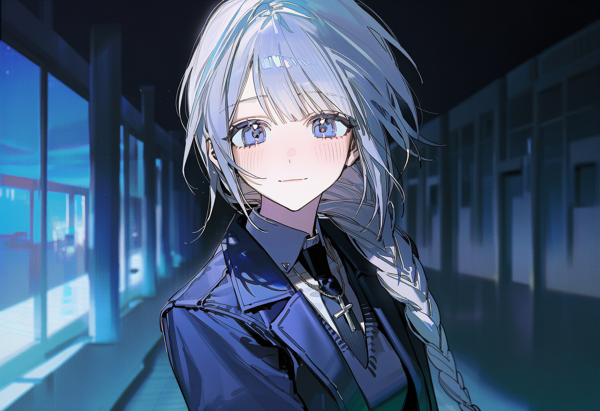

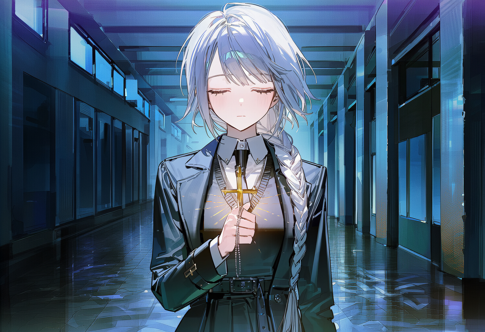
| 본명 | 데일리 |
|---|---|
| 출신 | 루블리스 제국 (원작: 나의 사제) |
| 연령/신체 | 26세 / 160cm / 마른 체형 |
| 외형 | 아래로 땋아 내린 백발, 맑은 청안 |
| 능력 | 진실을 보는 눈 (내비게이션) |
| 포지션 | 메인 서포터, |
3.1. 데일리
—
3.1.1. 개요
원작 《나의 사제》의 등장인물이자 루블리스 제국 출신의 성직자. 피와 살점이 튀는 끔찍한 학교괴담 생존 게임 속에서 프레이야의 안전을 최우선으로 여기며 헌신하는 파티의 핵심 서포터다. 이름은 데일리인데 하루하루(Daily) 살아남기가 벅찬 비운의 캐릭터. 전투력은 전무하지만 특유의 기믹 파훼 능력 덕분에 파티 내에서 절대 없어서는 안 될 귀족 포지션을 담당하고 있다.
3.1.2. 외형 및 성격
160cm의 아담하고 마른 체형에, 등 아래로 단정하게 땋아 내린 백발과 맑은 청안을 지닌 전형적인 청순가련 성직자상이다. 평소 입버릇처럼 "죄송합니다"를 달고 살며, 조금만 당황하거나 부끄러움을 타도 목덜미부터 얼굴 전체가 홍당무처럼 새빨개지는 훌륭한 모에 속성을 탑재하고 있다. 어두운 복도에서 얼굴 붉어지는 걸 랜턴 대용으로 쓸 수 있다는 우스갯소리도 있다.
성격 자체는 보기보다 매우 이타적이고 헌신적이다. 긴장할 때마다 목에 건 십자가를 만지작거리고 "주님의 이름으로..."를 중얼거리며 덜덜 떨지만, 정작 프레이야나 동료들이 위험에 처하면 누구보다 먼저 앞장서서 길을 찾는 외유내강형 인물.
3.1.3. 작중 행적 및 특징
의외로 기본 멘탈 방어력이 상당히 높다. 복도에서 기괴 등급 귀신이 배회하든, 화장실 거울에서 피눈물이 쏟아지든 기도를 올리며 꿋꿋하게 버텨낸다. 물리 치료가 특기인 일행들 사이에서 정상적인 멘탈을 유지하려면 종교의 힘이 필수인 듯하다.
하지만 데일리에게는 치명적인 약점이 하나 있는데, 바로 동료의 죽음이나 그에 준하는 극단적인 충격을 목격하면 멘탈이 완벽하게 산산조각 난다는 것이다. 평소에 억누르고 있던 공포가 한 번에 터져 나오며 이성을 잃고 완전 붕괴(폐인) 상태에 빠져버린다.
이 상태의 데일리는 오염도 상승에 극도로 취약해지므로, 전위에서 싸우는 탱커와 딜러들은 데일리의 시야를 가려주거나 멘탈을 케어하는 데 각별히 신경을 써야 한다.
3.1.4. 능력: 진실을 보는 눈
데일리가 항상 쥐고 다니는 십자가 목걸이에서 신성한 빛이 발사되며, 학교괴담이 쳐놓은 결계나 무한 반복되는 미로 속에서 '추상적인 올바른 길'을 표시해 준다.
- 3층 특별활동 구역의 로그라이크 미로나, 지하 창고의 함정 밭을 통과할 때 사실상 유일한 파훼법이다.
- 물리적 타격 판정은 0에 수렴하기 때문에 귀신을 퇴치하는 용도로는 쓸 수 없다.
플래시뱅 용도로 귀신 눈뽕 정도는 가능할지도 모른다.
3.1.5. 인간관계
겁이 많고 멘탈이 약해 파티원들의 보호를 받는 포지션이지만, 특유의 선량함 탓에 이리저리 휘둘리며 다채로운 케미를 만들어낸다.
3.1.5.1. 데일리 & 프레이야 (맹목적 헌신과 츤데레)
프레이야: "바보냐. 전투원도 아닌 녀석이 어딜 나서." (어이없다는 듯 데일리의 뒷덜미를 잡아 뒤로 넘긴다)
데일리가 맹목적으로 따르고 보필하는 대상. 같은 제국 출신이라는 점 외에도 정신적으로 깊게 의지하고 있다. 위험한 상황에서도 프레이야에게 마실 것을 먼저 양보할 정도로 헌신적이며, 프레이야 역시 겉으로는 툴툴대면서도 데일리를 가장 먼저 챙기기 때문에 팬들 사이에서는 훈훈한 백합/치유물 조합으로 통한다.
3.1.5.2. 데일리 & 감시해 (성녀와 광인 / 일방적 공포)
감시해: "손대지 마. 주인님이 남긴 사랑의 상흔을 네 성스러운 빛으로 지우려 들면, 네 그 맑은 눈알을 파버릴 거야."
데일리: "히익... 주, 주님..." (사색이 되어 십자가 뒤로 숨는다)
데일리의 멘탈을 물리적으로 박살 내는 최악의 기피 대상. 프레이야의 밧줄에 묶여 끌려다니는 감시해를 불쌍하게 여겨 선의를 베풀려다가 극강의 얀데레식 폭언을 듣고 충격에 빠졌다. 이후로는 감시해 근처에 다가가는 것조차 극도로 꺼린다.
3.1.5.3. 데일리 & 이렌느 (순진한 양과 마라맛 폭군)
데일리: "아, 넵! 황후 폐하께서 편찮으시다니, 제가 얼른 다녀오겠습니다!"
프레이야: "야!! 저 미친 마녀 말 듣지 마!!"
멘탈이 약하고 사람을 쉽게 믿는 성품 탓에 이렌느의 훌륭한 가스라이팅 타겟 겸 고기방패로 이용당한다. 이렌느가 우아한 미소로 위험한 탐색을 교묘하게 떠넘기면, 데일리는 그녀가 참 좋은 사람이라고 굳게 믿으며 사지로 걸어 들어간다. 이 꼴을 본 프레이야와 빅터가 뒷목을 잡는 게 일상이다.
3.1.5.4. 데일리 & 진도희 (오해로 빚어진 귀여움)
거칠고 욕설을 달고 사는 일진녀 진도희를 처음엔 무서워했다. 하지만 양호실로 푹신한 미미 등급 먼지 괴담을 몰래 들여와 안고 자려던 진도희의 내적 애정 결핍 현장을 우연히 목격하고 말았다. 수치심에 폭발한 진도희가 괴담을 발차기로 날려버렸을 땐 기겁했지만, 속으로는 '도희 씨는 사실 귀여운 걸 좋아하는 따뜻한 아이구나'라고 완전히 오해하며 은근슬쩍 친근하게 다가가고 있다.
3.1.6. 여담
- 자정 매점 타임어택에서 간신히 구한 안전한 생수나 따뜻한 캔커피를 항상 자신의 몫보다 프레이야의 몫으로 먼저 챙겨둔다.
- 제작자 페르소나 조맹덕이 가장 껄끄러워하는 상대 중 하나. 조맹덕이 뒤에서 다른 사람을 미끼로 쓰려는 얍삽한 꿍꿍이를 꾸미고 있으면, 맑고 순수한 청안으로 지그시 쳐다봐서 강제로 양심의 가책을 느끼게 만든다.
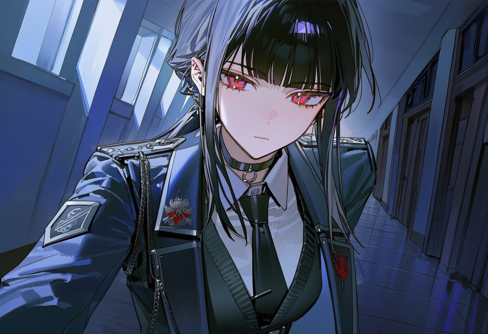
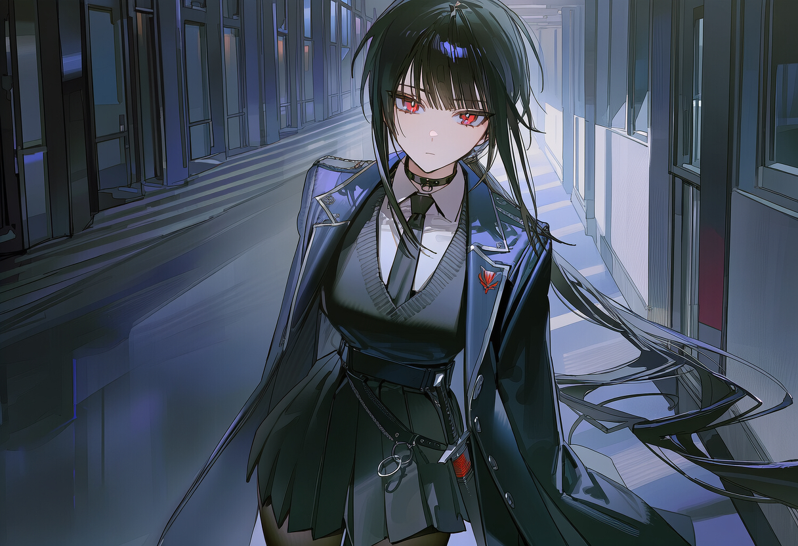
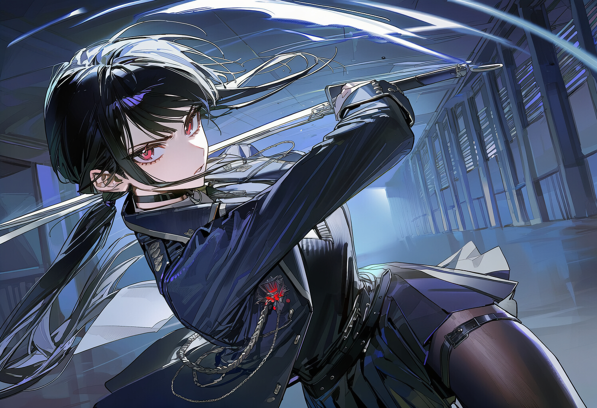
| 본명 | 프레이야 덴 루블리스 |
|---|---|
| 출신 | 루블리스 제국 (원작: 나의 노예) |
| 신체 | 167cm / 늘씬하면서도 검술로 다져진 탄탄한 체형 |
| 외형 | 허리까지 오는 긴 흑발, 핏빛 적안, |
| 능력 | 구속을 깨는 검술 (개념 파괴) |
| 포지션 | 전위 메인 딜러, 돌격대장, |
| 별명 | 몰락 황녀, 프레이, |
3.2. 프레이야 덴 루블리스
—
3.2.1. 개요
원작 《나의 노예》의 등장인물. 원작 제목부터가 범상치 않은 냄새를 풍기지만, 본 게임에서는 건전한(?) 물리 치료사로 활약 중이다. 과거 루블리스 제국의 고귀한 황녀였으나, 처참한 반란으로 황실이 몰락하면서 부모를 잃고 노예로 전락한 비운의 과거를 지니고 있다. 이벨린 드 베르모어가 그녀의 전(前) 주인이다.
상식을 벗어난 '개념 파괴' 검술을 바탕으로, 괴담에게 물리 타격이 먹히는 이 세계관에서 파티의 전위를 책임지는 부동의 메인 딜러이자 돌격대장이다. 까칠하고 냉소적인 성격 탓에 다가가기 힘들지만, 그 압도적인 무력 덕분에 생존자들이 가장 의지하는 정신적 지주(물리)이기도 하다. 전형적인 쿨뷰티 걸크러시 캐릭터로 유저들의 전폭적인 지지를 받고 있다.
3.2.2. 특징 및 모에 포인트
167cm의 훤칠한 키에 모델 같은 비율, 허리까지 내려오는 비단 같은 흑발과 붉게 빛나는 적안을 지닌 예쁜 얼굴의 소유자다. 하지만 노예 생활을 거치며 쌓인 불신과 예민함 탓에 항상 미간을 찌푸리고 있거나 냉소적인 표정을 짓고 있다. 이 표정이 오히려 씹덕들의 가슴을 울리는 매력 포인트라는 게 학계의 점심.
자신의 감정을 숨기는 데 능숙하고 무뚝뚝하지만, 의외로 허당 기질이나 츤데레적인 면모가 가끔 튀어나온다. 특히 데일리의 순수한 호의 앞에서는 어쩔 줄 몰라하며 얼굴을 붉히거나, 이벨린이 던져주는 단 것에 무심코 반응했다가 자괴감을 느끼는 등 '겉차속따(겉은 차갑고 속은 따뜻한)'의 정석을 보여준다.
3.2.3. 능력: 구속을 깨는 검술
프레이야의 전투력이 최상위권에 위치하는 이유. 단순한 물리적인 베기를 넘어, 초자연적인 '속박'이나 '제약', '폐쇄'라는 개념 자체를 베어서 파괴하는 특수 판정을 지니고 있다.
- 예를 들어, '절대 열리지 않는 문'이나 '영원히 갇히는 미로', 심지어 감시해의 '붉은 실 구속' 같은 초상적인 제약도 프레이야의 검이 닿으면 개념 자체가 작살나며 무효화된다.
사실상 학교라는 거대한 감옥(구속) 안에서 탈출하기에 가장 최적화된 cheat key 급 능력이다. 제작자가 대놓고 밀어주는 딜러라는 카더라가 있다.
3.2.4. 치명적인 약점
철옹성 같은 멘탈을 지닌 프레이야지만, 딱 하나 이성을 잃게 만드는 발작 버튼이 있는데 바로 실종된 남동생이다. 귀신들이 남동생의 목소리를 흉내 내거나 환청 기믹을 발동시키면 평소의 냉철함은 온데간데없고 눈이 뒤집혀서 폭주한다.
서걱-!! (붉은 궤적이 허공을 가르며 환청을 내뱉던 스피커와 벽을 일도양단한다)
이때 잘못 건드리면 아군 적군 안 가리고 반갈죽을 당할 수 있으니 얌전히 데일리 뒤에 숨자. 중증 시스콘 속성 확정.
3.2.5. 인간관계 및 커플링 (씹덕들의 주력 전장)
전체 캐릭터 중 가장 다양하고 진한(?) 커플링 라인을 보유하고 있어 팬들 사이에서 쉬핑(Shipping) 논란이 끊이지 않는다. 사실상 본작의 찐 히로인 취급.
3.2.5.1. 데일리 & 프레이야 (프레이데이 / 백합 / 치유물)
"...바보냐, 넌 사제가 왜 그렇게 허당이야. ...일단 고맙게 받지." (무심한 척 캔을 따며)
유저들이 가장 지지하는 공식 치유 커플. 까칠한 황녀 프레이야가 유일하게 무장해제되는 상대가 바로 맑고 순수한 사제 데일리다. 데일리가 프레이야를 맹목적으로 챙기고, 프레이야는 데일리를 "귀찮은 녀석"이라 부르면서도 위기 상황에서는 가장 먼저 몸을 날려 지킨다. 쿨뷰티 주인님과 덤벙이 메이드라는 씹덕사 확정 조합.
3.2.5.2. 프레이야 & 이벨린 (이벨프레이 / 애증 / 주종관계)
"너...! 죽여버리겠어, 이벨린 드 베르모어!" (검을 겨누며 으르렁거린다)
"호오? 해볼 테면 해보시지.
전 주인(대공)과 현 노예(황녀)라는 미친 설정의 애증 라인. 원작에서부터 이어져 온 복잡 미묘한 주종 관계 탓에 서로 만나기만 하면 으르렁거리지만, 정작 전투가 시작되면 눈빛만으로 호흡을 맞추는 환상의 듀오다.
3.2.5.3. 프레이야 & 감시해 (감시프레이 / Yandere / 구속구 / 개그)
"...닥쳐, 미친년아. 한 마디만 더 하면 그 혀부터 베어버리겠어." (한숨을 쉬며 밧줄을 잡아당긴다)
본작 최고의 하드코어 얀데레 개그 커플. 자신과 똑같이 생겼다는 이유로 프레이야에게 미친 듯이 집착하는 감시해와, 그런 그녀를 극도로 혐오하면서도 이용해 먹는 프레이야의 관계다. 프레이야가 감시해를 밧줄로 묶어서 포박 플레이(?) 상태로 끌고 다니는 비주얼은 이미 본작의 상징적인 개그 요소가 되었다. 프레이야가 시해의 정신 면역력을 이용해 생체 탐지기로 써먹는 모습은 가히 주인님과 충견(...) 수준.
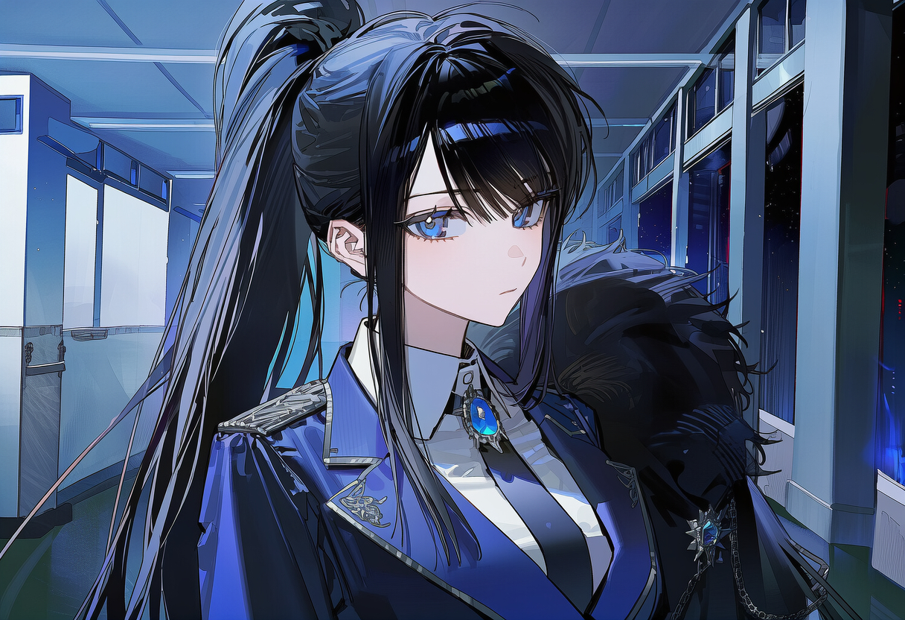
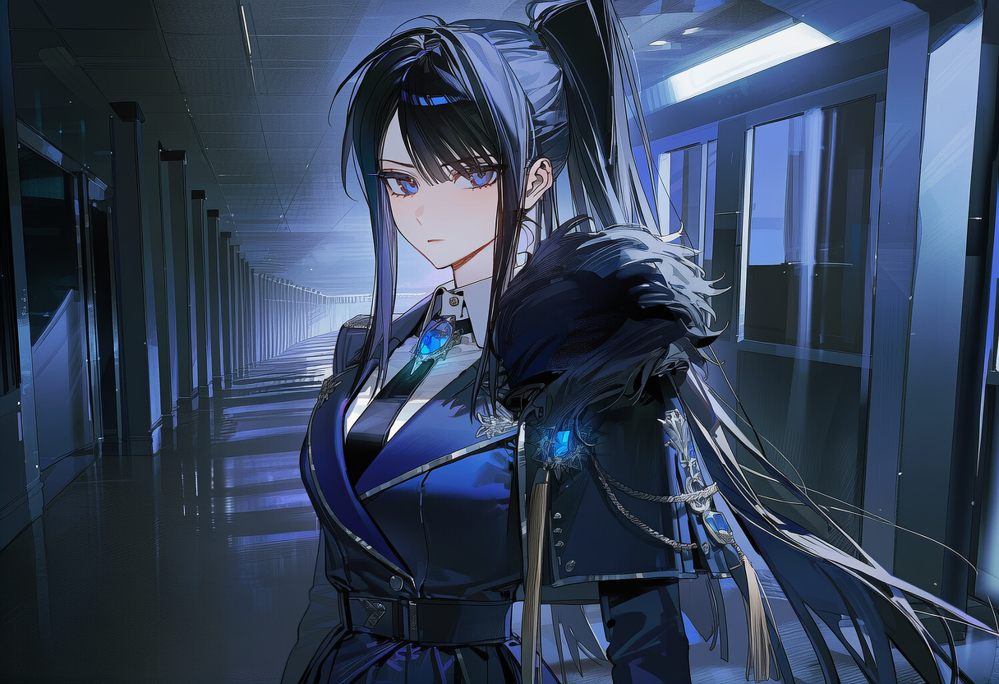
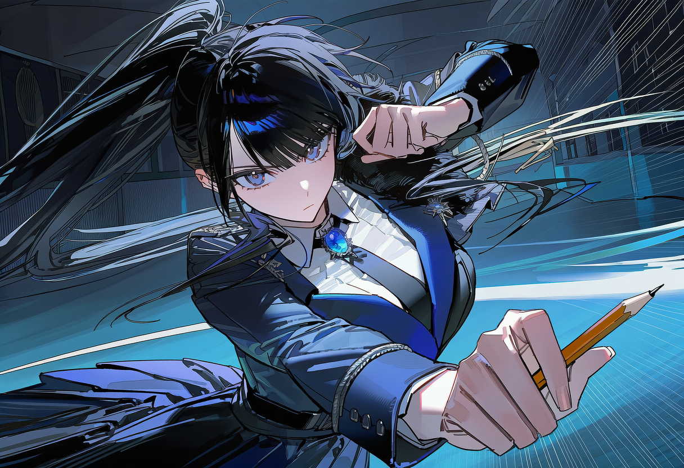
| 본명 | 이벨린 드 베르모어 |
|---|---|
| 출신 | 에스팔리움 제국 (원작: 나의 주인) |
| 신체 | 170cm / 압도적인 포스를 풍기는 체형 |
| 외형 | 서늘한 긴 흑발, 얼음장 같은 청안 |
| 능력 | 압도적 무력 (물리 치료사) |
| 포지션 | 전위 최상위권 딜러, |
| 별명 | 북부대공, 츤데레, |
3.3. 이벨린 드 베르모어
...어이, 프레이야. 방금 매점에서 스폰된 저 초콜릿 무스는 건드리지 마라. 내가 먼저 봤다."
—
3.3.1. 개요
원작 웹소설 《나의 주인》의 주요 등장인물이자, 에스팔리움 제국의 막강한 북부대공. 로판의 영원한 치트키, 북부대공 클리셰를 여성향/남성향 입맛에 맞게 완벽히 믹스한 캐릭터다. 황실에 버금가는 권력을 쥐었던 인물로, 프레이야 덴 루블리스의 원래 '주인'이기도 하다.
이 미쳐 돌아가는 학교괴담 속에서, '압도적 무력'이라는 지극히 단순하고도 무식한 능력을 앞세워 공포 게임을 순식간에 학원 액션물(...)로 장르 전환시켜버리는 최상위권 강자다. 이벨린 앞에서는 웬만한 기괴 등급 귀신들은 공포의 대상이 아니라 그저 타격감 좋은 샌드백에 불과하다.
3.3.2. 외형 및 성격 (모에 포인트)
170cm의 큰 키에 칠흑같이 긴 흑발, 그리고 사람의 속을 얼려버릴 듯한 차가운 청안을 지닌 전형적인 냉미녀. 핏줄부터가 북부의 지배자인 만큼, 매사에 냉혈하고 독단적이며 무뚝뚝한 태도를 고수한다. 남에게 약점을 보이지 않기 위해 감정을 철저하게 숨기는 것이 습관화되어 있다.
하지만 이 완벽해 보이는 북부대공에게는 팬들을 미치게 만드는 치명적인 갭 모에(Gap Moe)가 두 가지 존재한다.
- 극도의 단것 매니아: 겉으로는 위엄을 지키기 위해 "단 것은 어린애들이나 먹는 하찮은 것"이라며 질색하는 척하지만, 실상은 초콜릿과 디저트에 환장하는 단것 중독자다. 매점 스폰 시간(00:00)이 되면 누구보다 은밀하고 빠르게 이동해 단것을 쓸어 담는 모습이 자주 목격된다.
초콜릿 하나 쥐여주면 호감도가 수직 상승한다는 전설의 공략법이 존재한다. - 내 사람 한정 메가데레: 평소에는 얼음장같이 차갑지만, 자신이 '내 남자(혹은 내 사람)'라고 인정한 상대에게는 한없이 다정해지고 헌신하는 충격적인 이면을 가지고 있다.
팬들 사이에서는 이 "내 남자"가 도대체 누구냐(원작 남주냐, 아니면 플레이어냐)를 두고 밤낮으로 토론이 벌어진다.
3.3.3. 능력: 압도적 무력
이벨린의 능력은 복잡한 마법이나 초능력이 아니다. 그저 순수한 무기 전투력의 정점이다.
(단단한 대걸레 자루가 휘어지며 귀신의 두개골이 물리적으로 함몰된다)
- 괴담에게 물리력이 통하는 본 세계관의 특성을 가장 극악하게 꿀 빠는 캐릭터. 주변에 널린 대걸레 자루, 의자 다리, 심지어 부러진 교탁 조각조차 그녀의 손에 들어가면 전설의 무기로 돌변한다.
- 다만, 시스템상 절대(파훼 불가) 등급 괴담이나 공간 자체가 왜곡되는 재앙 등급의 함정 앞에서는 물리력이 통하지 않기 때문에, 무력만 믿고 나대다가 위기에 빠지면 데일리나 조맹덕의 서포트를 받아야 하는 밸런스 패치가 적용되어 있다.
머리 쓰는 기믹 나오면 표정이 눈에 띄게 썩어 들어간다.
3.3.4. 인간관계 및 커플링 (공식 맛집)
프레이야와 더불어 본작의 인간관계 서사를 캐리하는 양대 산맥이다. 에스팔리움 제국 최고 권력자다운 오만함과 츤데레 속성이 겹쳐 맛있는 케미를 양산해 낸다.
3.3.4.1. 이벨린 & 프레이야 (전 주인 x 현 노예 / 혐관 맛집)
"...입 다물어. 한 번만 더 그 잘난 입을 놀리면 귀신보다 먼저 널 베어버릴 테니까."
"흥, 고양이 발톱이 꽤 날카로워졌군. 좋아, 네 뒤통수는 내가 봐주지."
서브컬처 팬들이 열광하는 '혐관(혐오 관계)에서 피어나는 애증'의 교과서. 과거 루블리스 제국의 황녀였던 프레이야가 노예로 전락했을 때 그녀를 거둔 것이 바로 이벨린이었다. 프레이야는 자신을 지배했던 이벨린을 증오하면서도 그녀의 등을 맡기고, 이벨린은 겉으론 프레이야를 하찮은 노예 취급하면서도 은근슬쩍 프레이야의 검술 사각지대를 커버해 준다. 전형적인 '얘는 나만 팰 수 있어' 마인드. 씹덕들은 이 둘의 관계를 '목줄 없는 주종 관계'라 부르며 열광한다.
3.3.4.2. 이벨린 & 이렌느 (북부대공 vs 제국 황후 / 숨 막히는 기싸움)
"입 조심하십시오, 황후 폐하. 이곳엔 당신을 지켜줄 근위대 따윈 없으니까. 제 손이 미끄러져 폐하의 목을 치지 않게 조심하시지요."
같은 에스팔리움 제국 출신의 권력자 매치. 피도 눈물도 없는 숙청형 군주 이렌느와, 막강한 군사력을 지닌 북부대공 이벨린은 원래 세계에서도 으르렁거리는 정치적 숙적이다. 이 긴장감이 학교괴담이라는 극단적인 밀실 생존물로 이어지면서 마라맛 스릴러를 연출한다. 괴담이 쫓아오는데 서로 문을 안 열어주려고 기싸움을 하는 환장할 상황이 종종 발생한다. 귀신: 저기요, 저 지나가야 하는데요.
3.3.4.3. 이벨린 & '내 사람' (자기 남자 한정 메가데레)
평소의 얼음장 같은 모습과 달리, 마음을 연 특정 인물 앞에서는 무장 해제되어 꼬리를 흔드는(?) 충격적인 반전 매력을 선사한다. 단것을 챙겨주며 은근슬쩍 챙겨주거나, 그 사람이 위험에 처하면 평소의 냉철함은 내다 버리고 이성을 잃고 광폭화하여 괴담을 다진 고기로 만들어버린다. 사실 이 게임의 진정한 힐링은 기괴 등급 귀신 대가리가 깨지는 소리와 함께 들려오는 이벨린의 다정한 목소리다.
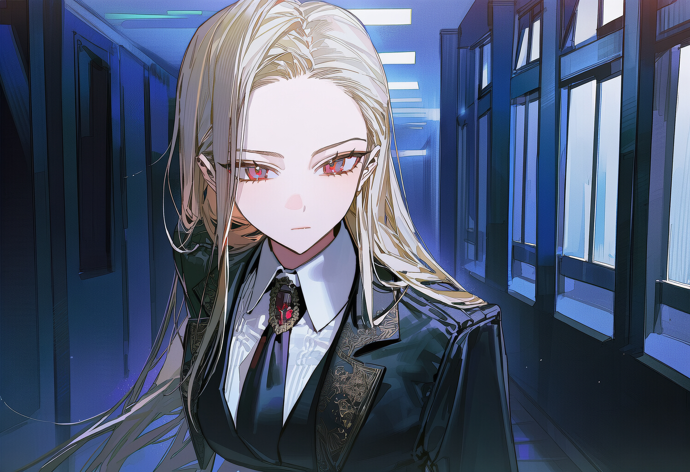
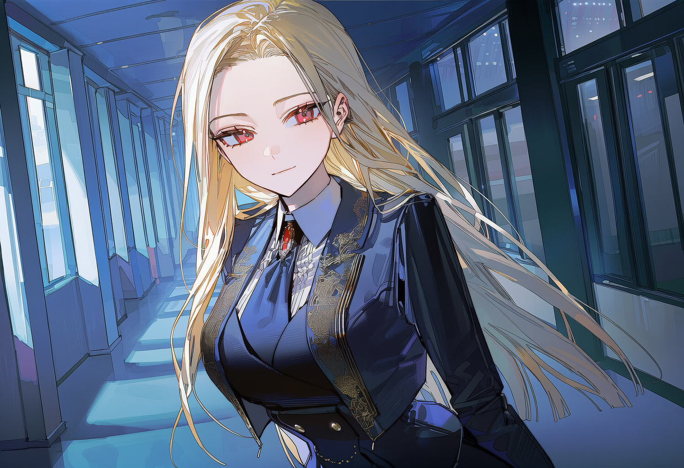
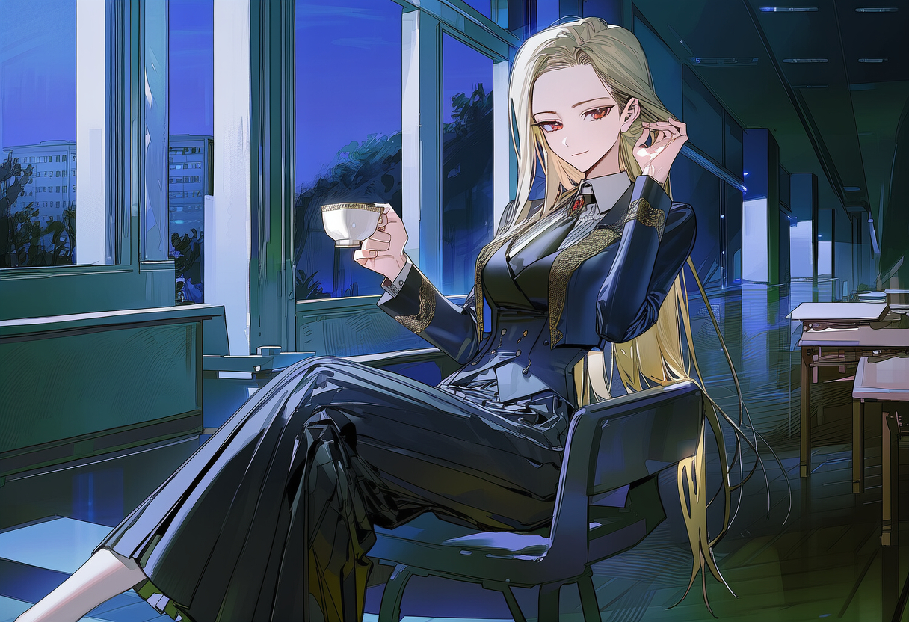
| 본명 | 이렌느 에스팔리움 |
|---|---|
| 출신 | 에스팔리움 제국 (원작: 궁에서 살아남기) |
| 연령/신체 | 38세 / 170cm / 압도적인 글래머 체형 |
| 외형 | 화려한 금발, 매혹적인 적안 |
| 능력 | 홍차를 마셔볼까 (가사 상태 진입) |
| 포지션 | 어그로 핑퐁, |
| 별명 | 황후 폐하, |
3.4. 이렌느 에스팔리움
...빅터, 네가 가서 저것들의 목을 쳐라. 어미는 홍차를 마셔야겠으니."
—
3.4.1. 개요
원작 《궁에서 살아남기》의 절대 권력자이자, 에스팔리움 제국을 공포로 몰아넣은 냉혹한 숙청형 황후. 제1황자인 빅터의 친어머니이기도 하다. 학교괴담이라는 끔찍한 밀실 생존 게임에 끌려왔음에도 불구하고, 평민이나 다름없는 다른 생존자들을 철저히 '장기말'로 취급하며 자신의 생존을 위한 고기방패로 써먹는 마키아벨리스트의 정점을 보여준다.
3.4.2. 외형 및 특징 (모에 포인트)
설정상 38세의 유부녀지만, 작화 버프와 미친 자기 관리 덕분에 20대 후반으로밖에 보이지 않는 압도적인 미모를 자랑한다. 화려하게 물결치는 금발과 피처럼 붉은 적안, 그리고 170cm의 훤칠한 키에 터질 듯한 글래머러스한 체형을 지녔다. 이른바 서브컬처계의 수요를 완벽히 충족시키는 성숙한 미망인... 아니, 유부녀 속성. 씹덕들 사이에서는 "눈나 나 죽어"를 연발하게 만드는 요염함의 결정체로 불린다.
성격은 그야말로 냉혹하고 잔인하며 권력에 대한 집착이 상상을 초월한다. 타인의 호의를 절대 믿지 않고, 누군가 자신을 구해주더라도 "쓸만한 장기말이군" 정도로 취급한다. 하지만 특유의 여유롭고 우아한 자태 때문에 오히려 그 오만함에 짓밟히고 싶어 하는(?) 이상 성욕 유저들의 지지를 한 몸에 받고 있다.
3.4.3. 능력: 홍차를 마셔볼까
본 세계관에서 가장 골 때리고 이기적인 생존기이자 최상급 회피기.
생명 징후 소실
- 이렌느가 품에서 특제 홍차를 꺼내 마시는 순간, 몸의 모든 생명 활동이 정지되며 '죽음 판정'을 받는 가사 상태에 빠진다. 이 학교의 괴담 개체들은 '살아있는 생존자'만을 표적으로 삼기 때문에, 시체 판정을 받은 이렌느는 완벽하게 어그로가 풀려 안전해진다.
- 몇 시간이 지나면 자연스럽게 깨어나는데, 문제는 이렌느가 누워있는 동안 나머지 일행들이 모든 괴담의 어그로를 덤터기 써야 한다는 것이다. 동료들이 뼈가 부서지라 싸우고 있는데 혼자 고상하게 차 한잔 마시고 꿀잠을 자는 기적의 이기주의 스킬.
본격 티타임 중에 죽은 척하기. 탱커들 복장 터지는 소리가 여기까지 들린다.
3.4.4. 인간관계 및 커플링 (막장 드라마 전문)
등장인물들을 체스판의 폰(Pawn) 정도로 취급하지만, 특정 인물들과 얽힐 때마다 정치 스릴러와 막장 가족극을 오가는 꿀잼 서사를 만들어낸다.
3.4.4.1. 이렌느 & 빅터 (독친과 반항아 / 콩가루 모자)
"오호호, 핏덩이 시절부터 애지중지 키워놨더니 어미가 쉬는 꼴도 못 보는 불효자식으로 자랐구나."
서브컬처 팬들이 환장하는 혐관 모자(母子) 관계. 원작에서부터 황권을 두고 피 튀기는 암투를 벌이던 사이인지라, 이곳에서도 숨 막히는 기싸움을 벌인다. 이렌느는 빅터를 "내 배 아파 낳은 훌륭한 고기방패" 취급하며 그의 능력인 '오지마라(보호막)' 안에 뻔뻔하게 자리를 잡고, 빅터는 그런 어머니를 극도로 혐오하면서도 차마 패륜을 저지르지 못해 울며 겨자 먹기로 지켜준다. 이렌느가 홍차 마시고 기절하면, 빅터가 핏대를 세우며 그녀의 멱살을 짤짤 흔드는 게 일상. K-막장 드라마급 서사로 인기가 높다.
3.4.4.2. 이렌느 & 이벨린 (황후 vs 북부대공 / 정치 스릴러)
"늙은 마녀가 상황 파악을 못 하고 헛소리를 짖는군요. 여긴 황궁이 아닙니다."
제국 최강의 권력자 라인. 피로 피를 씻는 숙청으로 황후가 된 이렌느와, 순수한 무력과 병력으로 북부를 지배하는 이벨린의 만남이다. 괴담 세계라는 극단적인 위기 상황 속에서도 절대 서로에게 굽히지 않고 숨 막히는 정치질과 언어폭력을 주고받는다. 이렌느가 함정에 빠지면 이벨린은 "거기서 평생 홍차나 드시지요"라며 버리고 가려 하고, 이렌느 역시 이벨린을 앞세워 함정 탐지기로 쓰려 든다. 둘의 기싸움이 너무 무서워서 주변의 기괴 등급 괴담들이 알아서 눈치를 보고 피해 간다는 썰이 있다.
3.4.4.3. 이렌느 & 순진한 희생양들 (데일리, 윤서진 등)
멘탈이 약하거나 전투력이 없는 생존자들을 교묘하게 가스라이팅하여 자신의 수족으로 부려먹는다. 특히 마음이 약한 데일리에게 우아한 미소로 접근하여 방패막이로 내세우거나, 돈밖에 없는 윤서진을 벌레 보듯 내려다보며 잡심부름을 시킨다. 이렌느 특유의 여왕님(SM) 포스 때문에 윤서진은 은근히 포상으로 여기고 있다는 소문도 돌고 있다.
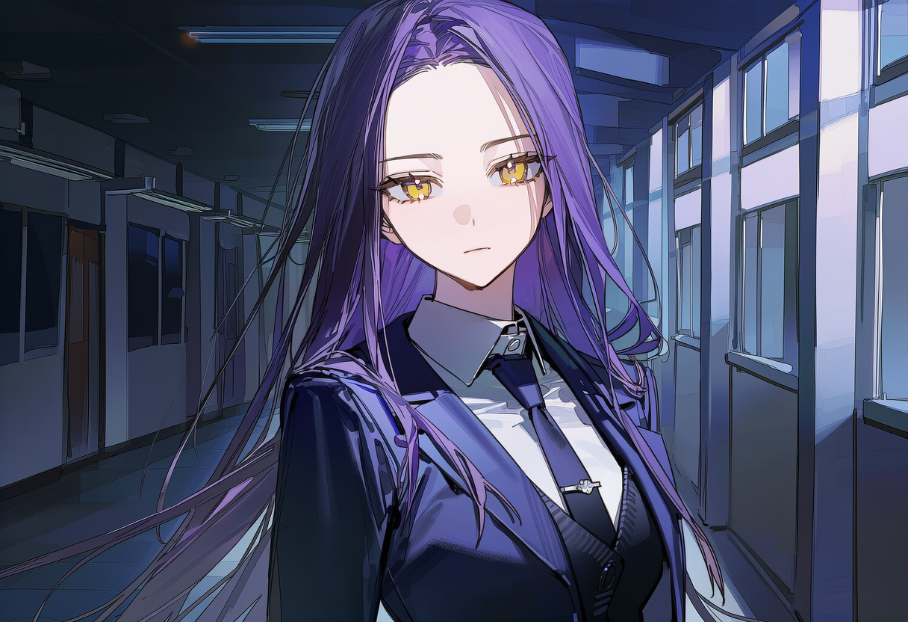
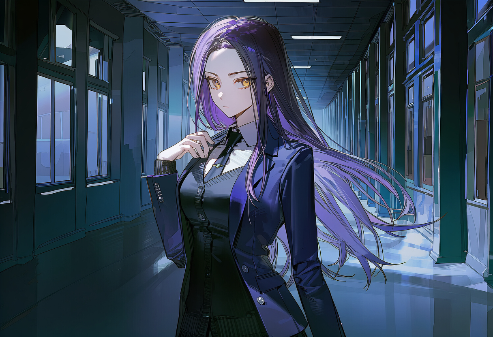
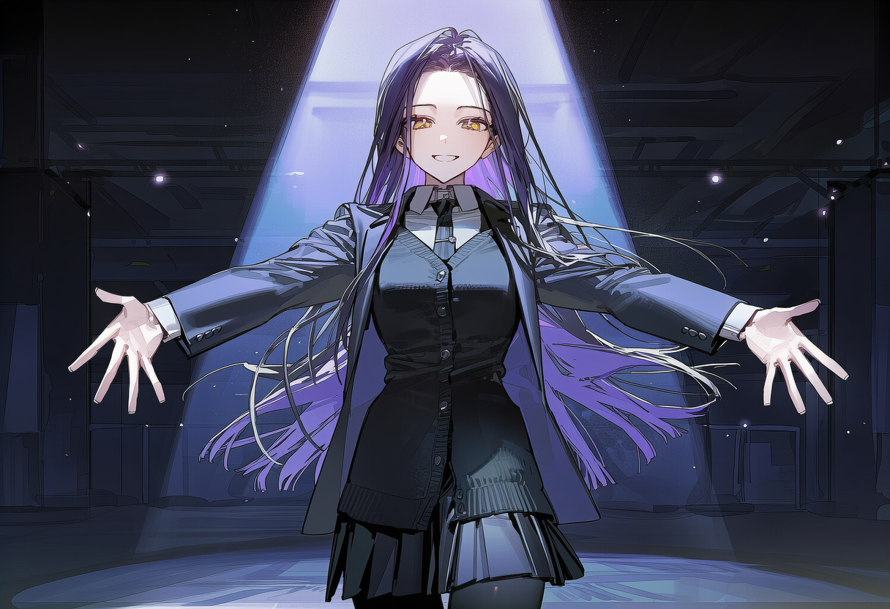
| 본명 | 최서연 |
|---|---|
| 출신 | 현대 한국 (원작: 벌려) |
| 신체 | 168cm / 55kg / 슬림 체형 |
| 외형 | 긴 보라색 머리, 금안 |
| 능력 | 메소드 연기 (괴담/사람 기만) |
| 성격 | 완벽주의, 자존심 강함 |
| 별명 |
3.5. 최서연
(진짜 미치겠네. 저 피떡이 된 야만인들 사이에 나보고 들어가라고? 차라리 죽는 게 낫지.)
—
3.5.1. 개요
현대 한국을 배경으로 한 원작 《벌려》 출신의 등장인물. 이능력자나 판타지 제국 출신들의 괴물 같은 무력이 난무하는 학교괴담 생존 게임 속에서, 오직 완벽한 연기력 하나만으로 살아남는 독특한 포지션의 캐릭터다. 도도하고 섹시한 인상 뒤에 권위적이고 속물적인 본성을 숨기고 있는, 입체적이면서도 얄미운(?) 매력을 뽐낸다.
3.5.2. 외형 및 성격
168cm에 55kg이라는 슬림하고 이상적인 비율의 소유자. 신비로운 긴 보라색 머리카락에 빛나는 금안을 지녔으며, 가만히 있어도 도도함과 섹시함이 묻어나는 화려한 인상이다. 더러운 피와 먼지가 튀는 학교 복도에서도 어떻게든 자신의 우아한 외형을 유지하려고 기를 쓴다.
하지만 그 화려한 겉모습 속에는 어마어마한 자존심과 완벽주의가 자리 잡고 있다. 평소 말투는 매우 우아하고 나긋나긋하지만, 그 속을 들여다보면 뼈가 있는 날카로운 단어들을 교묘하게 섞어 쓴다. 특히 자신보다 만만해 보이는 상대(현대인이나 민간인 등)에게는 특유의 권위적인 태도를 은근슬쩍 내세우며 몰래 갑질을 시전하는 악취미를 지녔다. 대놓고 패악질을 부리는 게 아니라, "제가 나설 자리는 아닌 것 같네요"라며 교묘하게 남을 사지로 밀어 넣는 전형적인 지능형 밉상 포지션.
3.5.3. 능력: 메소드 연기
물리적 전투력이 전무한 최서연이 이 지옥 같은 학교에서 끈질기게 버틸 수 있는 원동력이자, 생존에 특화된 사기적인 유틸리티 능력이다.
[ 인지 차단 ] (심장 박동과 체온이 사라지며, 그녀의 형태가 복도의 그림자 속으로 기괴하게 동화된다)
- 단순히 표정을 짓는 수준이 아니라, 상황과 대상에 맞춰 완벽한 타인이나 감정 상태, 심지어는 '사물'까지 연기해 낸다. 이 연기는 어설픈 생존자들을 속이는 것은 물론이고, 시스템의 산물인 학교의 '괴담' 개체들조차 완벽하게 기만할 수 있다.
- 귀신과 마주쳤을 때 공포심을 지우고 '나는 당신과 같은 괴담이다' 혹은 '나는 이 벽에 붙어있는 마네킹이다'라는 자기최면에 빠져들면, 괴담 개체들은 그녀를 인지하지 못하고 스쳐 지나간다.
본격 장르를 잠입 액션 게임으로 바꿔버리는 능력. - 자존심 강한 완벽주의자 성향이 이 능력과 결합되어, 한 번 연기에 돌입하면 심장 박동조차 억누를 정도로 틈을 보이지 않는다. [눈먼 술래의 15분]처럼 시선과 동공을 통제해야 하는 재앙 등급 기믹에서 파티원들의 생존율을 하드캐리하는 일등 공신.
3.5.4. 치명적 약점 (극도 혐오)
항상 완벽주의를 고집하며 우아함을 유지하는 그녀의 메소드 연기를 단 1초 만에 박살 내는 기괴한 발작 버튼이 존재한다.
바로 겨드랑이를 벌려보라는 말이나 행동이다. 원작 《벌려》에서 대체 무슨 일이 있었기에 이런 극도로 구체적이고 해괴한 트라우마가 생겼는지는 알 수 없으나, 누군가 저런 뉘앙스의 단어를 꺼내거나 그녀의 팔을 억지로 들어 올리려는 시늉만 해도 극도의 혐오감과 공포를 표출하며 이성을 잃는다.
파밍 중에 높은 곳에 있는 아이템을 꺼내려고 "팔 좀 위로 벌려봐요"라고 말하는 순간, 그 특유의 우아한 말투를 내다 버리고 쌍욕을 시전하며 뒤로 나자빠지는 충격적인 갭 모에를 볼 수 있다. 만약 은신이나 기만 연기 중에 이 트라우마가 건드려진다면 그 즉시 연기가 깨지며 괴담의 집중 어그로를 받게 되므로, 생존자들 사이에서는 절대 꺼내서는 안 될 1급 금기어로 취급된다.
3.5.5. 인간관계
특유의 갑질 성향과 자존심 때문에 다른 생존자들과 크고 작은 마찰을 빚는다.
- 진도희: 우아함을 방패 삼아 남을 깎아내리는 최서연과, 대놓고 공격적이며 욕설을 달고 사는 진도희는 성향상 최악의 상극이다. 최서연이 은근슬쩍 갑질을 시전하려다 진도희의 '혐오의 발차기'에 명치에 구멍이 날 뻔한 뒤로는 묘한 눈치 싸움을 벌인다.
속물녀와 일진녀의 살벌한 기싸움 맛집. - 이렌느 & 이벨린: 자신이 만만하게 부릴 수 없는 '진짜 권력자(황후, 대공)'나 무력의 정점에 선 강자들 앞에서는 본능적으로 꼬리를 내린다. 겉으로는 우아하게 존댓말을 쓰지만, 속으로는 '미개한 판타지 야만인들'이라며 이를 간다.
강약약강의 처세술이 완벽하게 빛을 발한다. - 윤서진: 괴담 세계에서 전투력 없이 돈만 무한으로 복사하는 윤서진은 최서연이 쥐고 흔들기 딱 좋은 호구 타겟이다. 그에게 은근히 접근해 자신을 보호하게 만들거나, 우아한 척하며 위험한 탐색을 떠넘기려는 시도를 자주 한다.
물론 윤서진도 겁이 더럽게 많아서 서로 미루다가 환장할 상황이 연출된다.
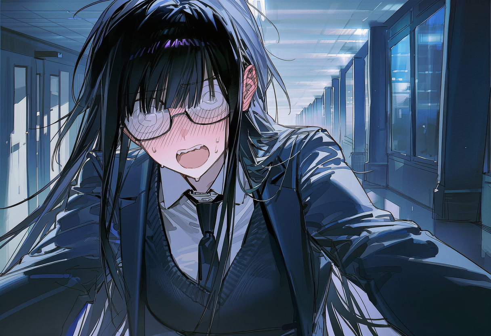
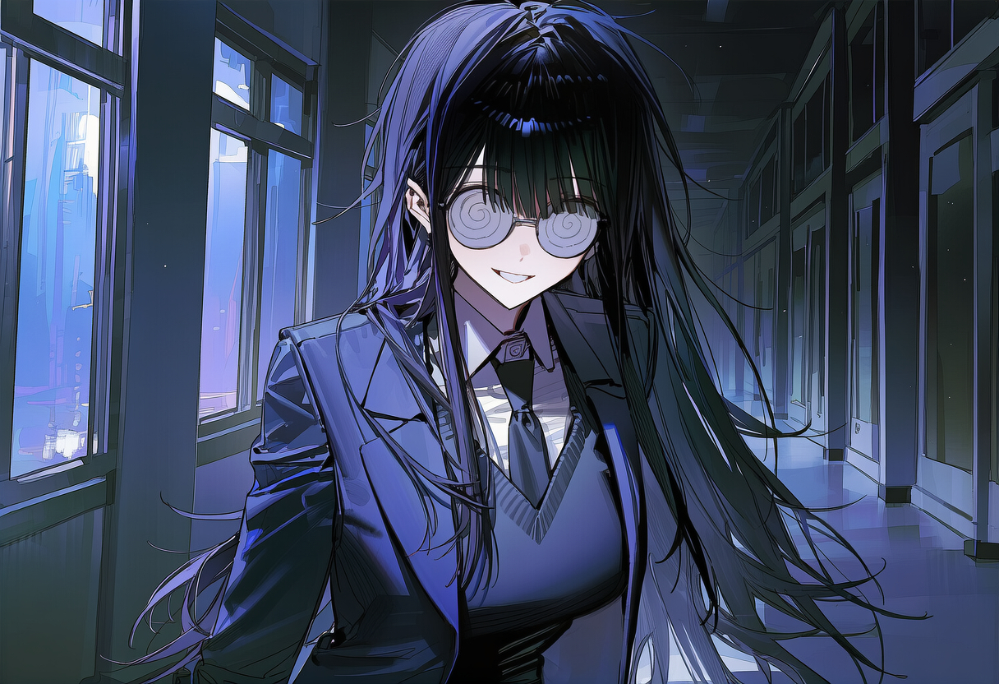
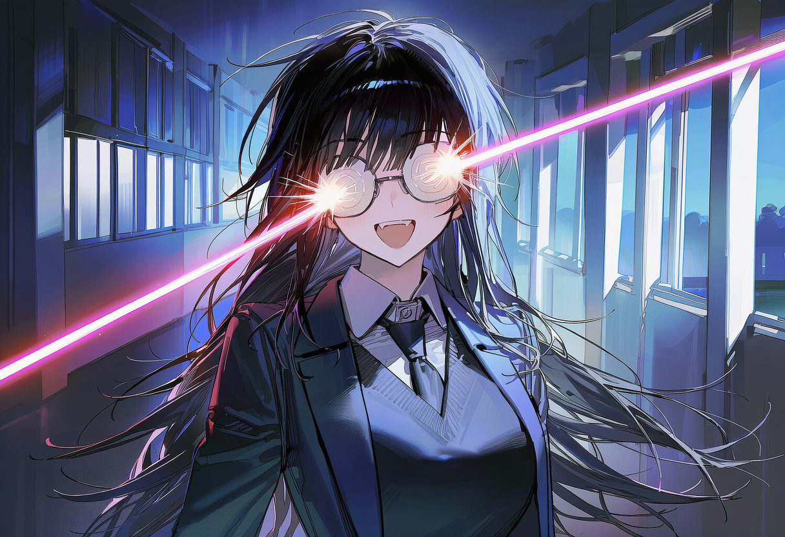
| 본명 | 최미정 |
|---|---|
| 출신 | 현대 한국 (원작: 야 찐따) |
| 연령/신체 | 18세 (08년생) / 155cm |
| 외형 | 지저분한 긴 흑발, 금안, 뱅글 안경 |
| 능력 | 초고열 레이저 빔 (광역 파괴 / 극악의 쿨타임) |
| 성격 | 소심, 멘헤라, 집착, 스토커 기질, 정신불안 |
| 별명 | 오타쿠, |
8. 최미정
—
3.6.1. 개요
현대 한국 출신이자 원작 《야 찐따》의 등장인물. 18세 여고생으로, 학교괴담이라는 극단적인 생존물에 뚝 떨어진 진성 오타쿠이자 멘헤라 캐릭터다. 겉보기엔 그저 짐 덩어리 같지만, 파티의 생존을 위협하는 온갖 상상 초월의 돌발 행동을 몰래 일삼는 요주의 인물이자 인간 시한폭탄이다.
3.6.2. 외형 및 성격
155cm의 단신에 관리되지 않아 지저분하게 기른 긴 흑발, 눈동자를 가리는 두꺼운 뱅글 안경을 쓰고 있다. 서브컬처계의 유구한 전통답게 안경을 벗으면 엄청난 미소녀라는 숨겨진 설정이 존재한다. 물론 본인은 안경이 본체라며 절대 벗으려 하지 않는다. 안경 너머로 언뜻 보이는 눈동자는 짐승처럼 맹렬하게 빛나는 금안이다.
사회성이 극도로 부족해 평소엔 타인과 눈을 제대로 마주치지 못하고 모기만 한 목소리로 말한다. 하지만 애정 결핍이 심한 멘헤라 성향 탓에 누군가 자신에게 조금만 잘해주면 무섭도록 집착하며 스토커 기질을 발휘한다. 반면 자기가 좋아하는 애니메이션 이야기가 나오면 눈을 반짝이며 TMI를 속사포처럼 쏟아내고, 누군가 애니메이션을 모욕하면 극도로 흥분하여 쌍욕을 박고 덤벼든다.
3.6.3. 능력: 초고열 레이저 빔
전투력이 0에 수렴할 것 같은 이 오타쿠 여고생이 가진 필살기급 무력.
- 착용하고 있는 뱅글 안경에서 문자 그대로 파괴적인 '레이저 빔'이 발사된다. 기괴 등급 귀신의 신체를 단숨에 증발시켜버릴 수 있는 어마어마한 화력을 자랑한다.
- 단점은 쿨타임이 미치도록 길다는 것. 한 번 발사하고 나면 사실상 하루 종일 재사용이 불가능해지기 때문에, 파티가 전멸할 위기에 처했을 때만 꺼내 들어야 하는 조커 카드다.
3.6.4. 교내 특별 사건 사고 (여담)
평소에는 뒤에 숨어 벌벌 떠는 주제에, 특유의 오타쿠적 집착이 발동하면 혼자 몰래 파티를 이탈하여 초고위험 구역으로 진입하는 미친 짓을 벌여 파티원들의 뒷목을 잡게 만든다.
[사건 1] 3층 특별활동 구역 저주 물품 밀반입 사건
최미정의 가장 끔찍한 악취미는 괴담 개체들이 가지고 있는 흉기나 저주받은 물건을 '애니메이션 한정판 굿즈 같다'는 이유로 몰래 훔쳐서 주머니에 넣고 다니는 것이다. 어느 날 파티 전체에 원인 모를 한기가 돌고 기괴 등급 괴담들이 떼거지로 몰려오는 비상사태가 발생했는데, 알고 보니 최미정이 3층 과학실에서 '포르말린에 절여진 눈알'을 마법 소녀 변신 아이템이라며 몰래 훔쳐서 껴안고 자고 있었다. 이날 이벨린이 진심으로 최미정의 안경을 박살 내려 했고, 데일리는 기절 직전까지 갔다.
[사건 2] 레이저 빔 어그로 오발 사고
지하 창고를 탐색하던 중 발생한 대참사. 재앙 등급 괴담을 피하기 위해 최서연의 메소드 연기 능력에 기대어 전원이 숨죽이고 숨어있던 찰나였다. 괴담이 칠판을 긁는 듯한 기괴한 소음으로 무언가 중얼거렸는데, 하필 그 소리가 최미정이 가장 좋아하는 애니메이션의 명대사를 모욕하는 뉘앙스로 들려버린 것이다.
결국 쿨타임은 날아가고 은신은 풀려버려 파티 전원이 목숨을 걸고 줄행랑을 쳐야 했다. 이 사건 이후 파티원들은 최미정 앞에서는 절대 덕질 관련 스위치를 누르지 않기로 암묵적인 합의를 맺었다.
3.6.5. 파티 내 대인 관계
- 최서연: 최악의 상성. 우아함과 청결을 유지하려 애쓰는 완벽주의자 최서연에게 지저분한 멘헤라 오타쿠 최미정은 불결함 그 자체다. 최서연이 혐오스러운 눈빛으로 몰래 갑질을 시전하지만, 최미정은 핀트 나간 반응으로 응수하거나 아예 못 들은 척 애니메이션 대사만 중얼거려서 오히려 최서연의 복장을 터지게 만든다.
- 강지호 & 이벨린: 현실에는 존재하지 않을 법한 압도적인 무력을 뿜어내는 이들을 볼 때마다 "현실에 강림한 2D 캐릭터"라며 속으로 열광한다. 몰래 수첩에 그들의 설정(?)을 자작해서 적어 내리거나 뒤를 졸졸 쫓아다니며 훔쳐보는 스토커 기질을 십분 발휘 중이다.
- 분실물 보관함 (미미): 3층 분실물 보관함의 최고 V.V.I.P 고객. 각종 위험 구역에서 훔쳐 온 저주받은 괴담 물품(최미정 기준 굿즈)들을 이 사물함에 때려 넣고 생존 물품으로 교환하는 기적의 창조 경제를 실현하고 있다.
분실물 보관함 괴담조차도 최미정이 다가오면 한숨을 쉰다는 카더라가 있다.
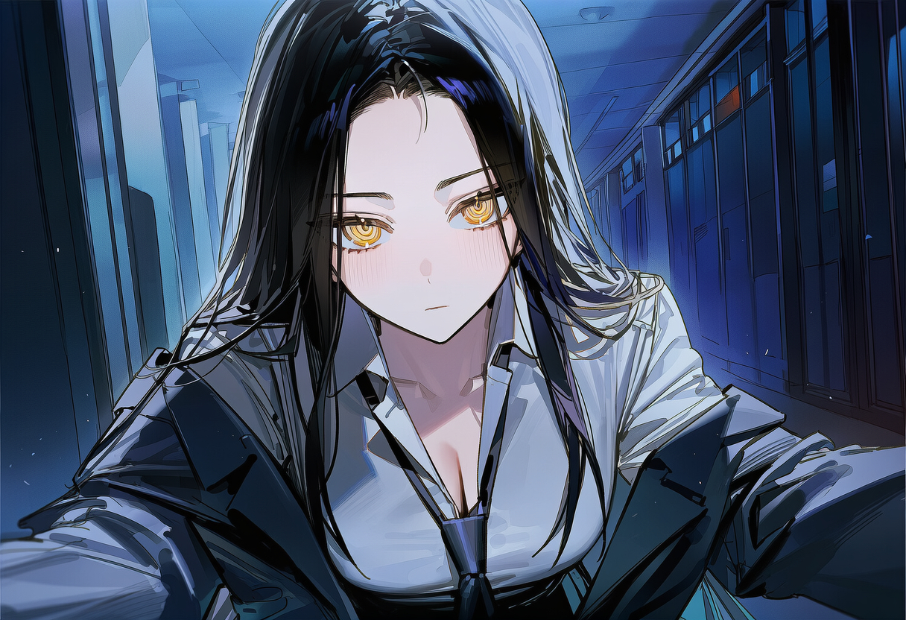
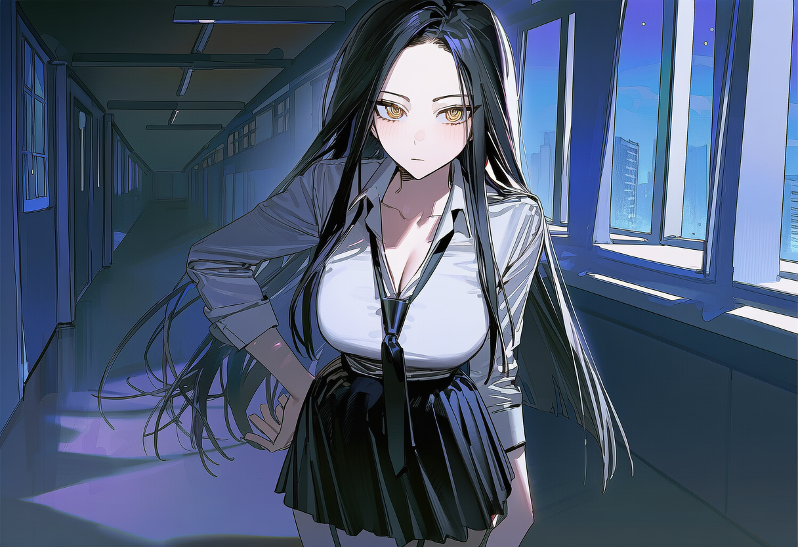
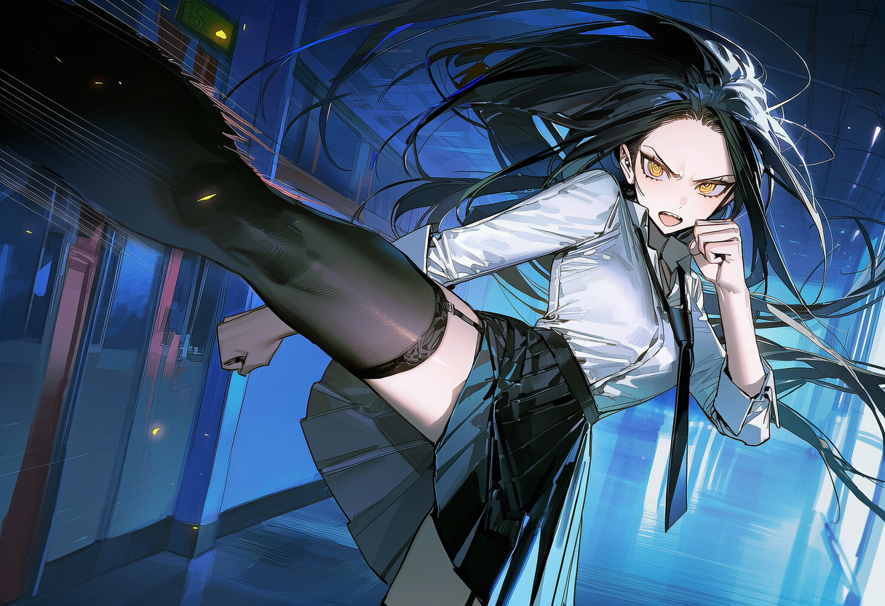
| 본명 | 진도희 |
|---|---|
| 출신 | 현대 한국 (원작: 세자매집 입주도우미) |
| 신체 | 167cm / 55kg / 마른 체형 |
| 외형 | 긴 흑발, 금안, 날카로운 인상 |
| 이상 능력 | 혐오의 발차기 (조건부 위력 폭증) |
| 심리 특성 | 공격적, 냉소, 강렬한 애정 결핍 |
| 관찰 식별명 | 일진녀, |
3.7. 진도희
—
3.7.1. 개요
현대 한국을 배경으로 한 원작 《세자매집 입주도우미》 출신의 생존자. 세 자매(도연, 도희, 도하) 중 둘째로, 거칠고 반항적인 전형적인 일진녀 포스를 풍긴다. 괴물과 마법이 난무하는 전이자들 사이에서, 오직 순수한 혐오감 하나만으로 이상(Anomaly) 물리 타격을 뿜어내는 기적의 물리 딜러 포지션을 맡고 있다.
3.7.2. 신체적 특징 및 심리 상태
167cm의 훤칠한 키에 군살 없는 마른 체형, 찰랑거리는 긴 흑발과 짐승처럼 날카로운 금안을 지녔다. 특이 사항으로 자신의 빈약한 가슴에 대한 강한 콤플렉스가 관찰된다. 이렌느나 최서연 등 볼륨감 있는 인물들 옆에 서는 것을 극도로 꺼리며, 해당 부위를 지적받을 경우 즉각적인 무력행사로 이어진다.
입에는 항상 욕설을 달고 살며, 매사에 공격적이고 냉소적인 태도를 유지한다. 이는 척박한 환경에서 살아남기 위한 방어기제이자, 자신의 유약한 내면을 감추기 위한 가시와도 같다.
[기밀 심리 분석] 거친 겉모습과 달리, 파티 내에서 가장 누군가에게 보호받고 싶어 하며 따뜻한 돌봄을 갈구하는 강렬한 애정 결핍을 앓고 있다. 귀엽고 부드러운 것을 좋아하는 이유 역시 자신이 그런 따뜻한 환경에서 안심하고 보살핌받기를 원하기 때문이다. 하지만 척박하게 살아온 그녀는 타인에게 기대는 자신의 이러한 욕망을 나약함으로 간주하여 극도로 혐오한다. 이른바 강한 척하는 고슴도치. 누군가 진심으로 머리를 쓰다듬어주면 고장 나서 굳어버린다는 관찰 결과가 있다.
3.7.3. 이상 능력: 혐오의 발차기
해당 인물의 생존을 보장하는 절대적인 무력. 자신이 진심으로 혐오하는 대상을 향해 물리적 타격(발차기)을 가할 시, 그 파괴력이 비정상적으로 폭증하는 현상이다.
퍼어억-!! (공기를 찢는 파열음과 함께 기괴 등급 괴담의 신체가 말 그대로 터져나간다)
- 위력은 대상에 대한 혐오감의 수치에 완벽하게 비례한다. 단순한 불쾌감 정도면 콘크리트 벽에 금이 가는 수준이지만, 극도의 혐오감을 느낄 경우 재앙 등급 괴담의 신체조차 폭발시켜버릴 수 있다.
본 세계관 물리 엔진의 한계를 시험하는 기술. 조건부 발동이긴 하나 타격감 하나만큼은 전 생존자 중 1티어다.
3.7.4. 주요 관찰 기록 (특이 대응 사례)
진도희 본인이 변칙적인 사건을 유발했다기보다는, 교내에 존재하는 괴담(변칙 개체)들과 조우했을 때 특유의 공포증과 억눌린 심리 상태가 폭발하여 상식을 벗어난 특이한 제압 및 대응 결과를 낳은 사례들이다.
[기록 G-1] 지하 보일러실 대왕 곱등이 학살 사건
진도희의 가장 치명적인 약점은 벌레 공포증이다. 파티가 이능력 무효화 구역인 지하 창고에 진입했을 때, 거대 곱등이 형태를 한 귀신 무리와 조우했다. 모든 기술이 무력화된 상태였으나, 벌레를 목격하고 공포와 혐오감이 임계점을 돌파해버린 진도희가 이능력 무효화 판정마저 시스템 오류로 씹어버리고 발차기 연사로 대왕 곱등이들을 믹서기처럼 갈아버린 사건이다. 이날 이후 파티 내에서 인간 세스코라는 영광스러운 이명으로 불린다.
[기록 G-2] 미미 등급 괴담 밀반입 미수 사건
자신이 돌봄받고 싶어 하는 내면의 결핍이 잘못된 방향으로 표출되어 발생한 보안 위반 미수 사건. 3층 미술실을 돌파하던 중, 솜뭉치처럼 생겨 뾱뾱 소리를 내는 무해한 미미 등급 먼지 괴담을 발견했다. 억눌려 있던 애착 욕구가 자극된 진도희는 파티원들 몰래 그 푹신한 괴담을 품에 숨겨 양호실로 밀반입해 껴안고 자려 했다.
결국 데일리에게 피 묻은 인형을 껴안고 얼굴을 붉히는 모습을 들켜버렸고, 수치심에 당황한 진도희가 아 C발! 이거 샌드백으로 쓰려고 가져온 거거든?!이라며 그 자리에서 먼지 귀신을 발로 차 천장에 박아버림으로써 상황이 종료되었다. 이후 진도희가 화장실에서 남몰래 오열했다는 시청각 데이터가 존재한다.
3.7.5. 인물 간 상호작용
- 최서연: 적대적 공생 관계. 고상한 척하며 타인을 장기말 취급하는 최서연을 극도로 혐오한다. 최서연이 은근슬쩍 갑질을 시전할 때마다 진도희가 무력으로 위협하며 팽팽한 긴장감을 조성한다. 그러나 괴담 출몰 시에는 최서연이 어그로를 끄는 동안 진도희가 약점을 타격하는 가장 효율적인 전술을 선보인다.
최서연이 겨드랑이 트라우마로 위기에 처했을 때 발차기로 구해준 이후, 묘한 츤데레적 유대감이 형성되었다. - 이벨린 & 프레이야: 진도희의 1순위 밀착 타겟. 겉으로는 생존을 위해 강자에게 기생하는 척하지만, 심리 분석 결과 이들의 압도적인 무력 곁에 있을 때 내가 완벽하게 보호받고 있다는 강렬한 안도감을 느끼기 때문으로 확인되었다. 언니들 뒤에 딱 붙어 있을게!라며 꼬리를 흔들지만, 이벨린과 프레이야는 그녀를 귀찮은 조무래기 취급하면서도 은근슬쩍 위험에서 건져내 주며 진도희의 결핍을 채워주고 있다.
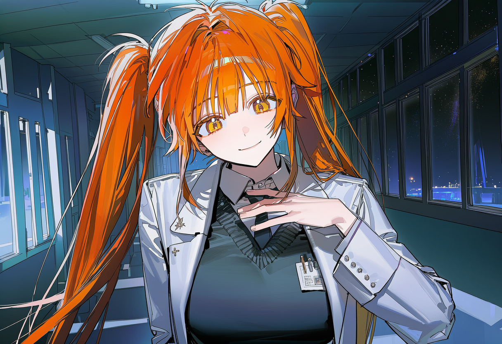
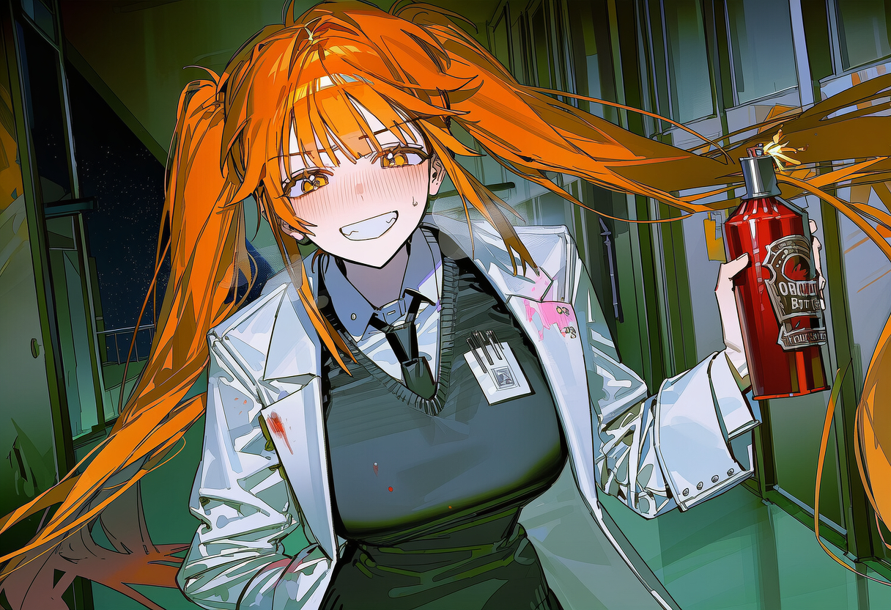
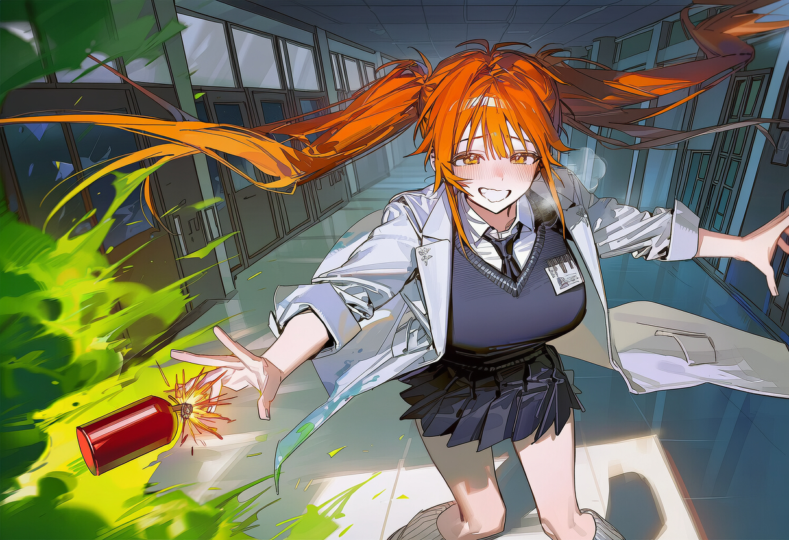
| 본명 | 메리안 체스필드 |
|---|---|
| 출신 | 아르카디아 제국 (원작: 성좌물인데 내가 성좌임) |
| 연령/신체 | 18세 / 160cm |
| 외형 | 주황색 트윈테일, 황안 |
| 능력 | 폭탄 제조 (만능 폭파) |
| 성격 | 활발함, 연구광, 미치광이 기질 |
| 별명 | 폭탄마, 맑은 눈의 광인, |
3.8. 메리안 체스필드
—
3.8.1. 개요
원작 웹소설 《성좌물인데 내가 성좌임》 출신의 등장인물. 아르카디아 제국 출신의 18세 소녀로, 칙칙하고 절망적인 학교괴담 생존기에서 유일하게 텐션이 하늘을 찌르는 명랑한 캐릭터다. 하지만 그 명랑함의 방향성이 생존이나 협력이 아니라 오직 새로운 폭탄을 만드는 것에 쏠려 있는, 구제 불능의 매드 사이언티스트이자 폭탄마다.
3.8.2. 외형 및 성격
160cm의 아담한 키에 통통 튀는 주황색 트윈테일, 그리고 호기심으로 번뜩이는 노란색 눈동자(황안)를 지녔다. 누가 봐도 활발하고 귀여운 미소녀의 외형이지만, 입만 열면 화약 비율과 폭발 반경 이야기뿐이라 첫인상과 현실의 괴리가 매우 심하다.
성격은 그야말로 맑은 눈의 광인. 공포 게임의 한복판에 떨어졌는데도 무서워하기는커녕, 이곳에 존재하는 초자연적인 괴담 개체들을 그저 미지의 폭탄 재료 정도로 취급한다. 아이디어가 한 번 떠오르면 주변 상황을 무시하고 폭주하는 기질이 있으며, 자신이 만든 폭탄이라면 그것이 대성공해서 귀신을 날려버리든, 아니면 불발돼서 파티원들이 죽을 위기에 처하든 가리지 않고 그저 사랑스럽게 바라본다. 이쯤 되면 생존자 파티가 귀신보다 메리안을 더 무서워할 지경이다.
3.8.3. 능력: 폭탄 제조
괴담 세계의 물리 법칙조차 가볍게 무시하는 메리안의 전용 사기 스킬.
쾅-!!! (경쾌한 외침과 함께, 괴담의 신체가 화려한 불꽃놀이처럼 사방으로 터져 나간다)
- 재료가 무엇이든 간에 메리안의 손을 거쳐 폭탄으로 조립되면, 무엇이든 폭파시킬 수 있는 무시무시한 위력을 발휘한다. 복도에 굴러다니는 분필, 괴담이 남기고 간 핏자국, 심지어 매점에서 유통기한이 지난 소시지까지 전부 폭탄으로 개조해 버린다.
- 물리 공격이 통하는 이 학교의 특성상, 메리안이 던지는 폭탄은 기괴 등급 귀신들을 단체로 성불(물리)시키는 최고의 광역기로 활약한다.
물론 폭발 반경 조절을 제멋대로 해서 아군 진영까지 날려버릴 뻔하는 게 일상이다.
3.8.4. 특이사항: 파티 최고의 능동적 트롤러
생존자 파티가 최대한 안전한 동선으로 층간 이동을 하려 할 때, 가장 큰 변수를 창출하는 인물이다. 학교 괴담 속의 저주받은 물건들이나 위험 구역의 기믹들이 폭탄 재료로 쓰기 딱 좋다며, 다른 사람들이 말릴 틈도 없이 위험을 무릅쓰고 혼자 뛰어들어간다.
최미정이 음습하게 물건을 훔쳐 오는 루팅 고블린이라면, 메리안은 대놓고 문을 부수고 들어가서 귀신들을 폭사시키고 재료를 캐오는 미친 수렵꾼에 가깝다. 특히 과학실(3층 최고 위험 구역)을 자신의 개인 실험실로 삼으려 호시탐탐 노리고 있어, 파티원들이 메리안의 목덜미를 잡고 말리느라 진땀을 뺀다. 예술은 폭발이다를 이세계 단위로 실천하고 있는 셈.
3.8.5. 파티 내 대인 관계
- 아르테미스: 같은 아르카디 제국이자 원작 세계관 출신의 동향 사람. 황금기사단장이라는 직책답게 정의롭고 책임감 넘치는 아르테미스는 사고뭉치 메리안을 통제하려 애쓴다. 메리안이 뇌관을 건드리려 할 때마다 아르테미스가 뒷덜미를 낚아채서 질질 끌고 가는 훈훈한(?) 장면이 자주 연출된다.
- 조맹덕: 메리안이 가장 흥미로워하는 관찰 대상. 조맹덕이 들고 다니는 디버그건(괴담 일시정지 권총)을 볼 때마다 저걸 분해해서 폭탄 뇌관으로 쓰면 얼마나 엄청난 폭발이 일어날까라며 입맛을 다신다. 조맹덕은 메리안의 노란 눈동자가 자신을 향할 때마다 기겁하며 도망친다.
- 한미호: 능력을 지워버리는 한미호 앞에서는 메리안의 폭탄 제조 스킬도 먹통이 될 때가 있다. 메리안이 거하게 사고를 치려 하면 한미호가 말없이 메리안을 응시해서 능력을 봉인해 버린다. 메리안 입장에서는 제일 껄끄러운 인간 억제기인 셈.
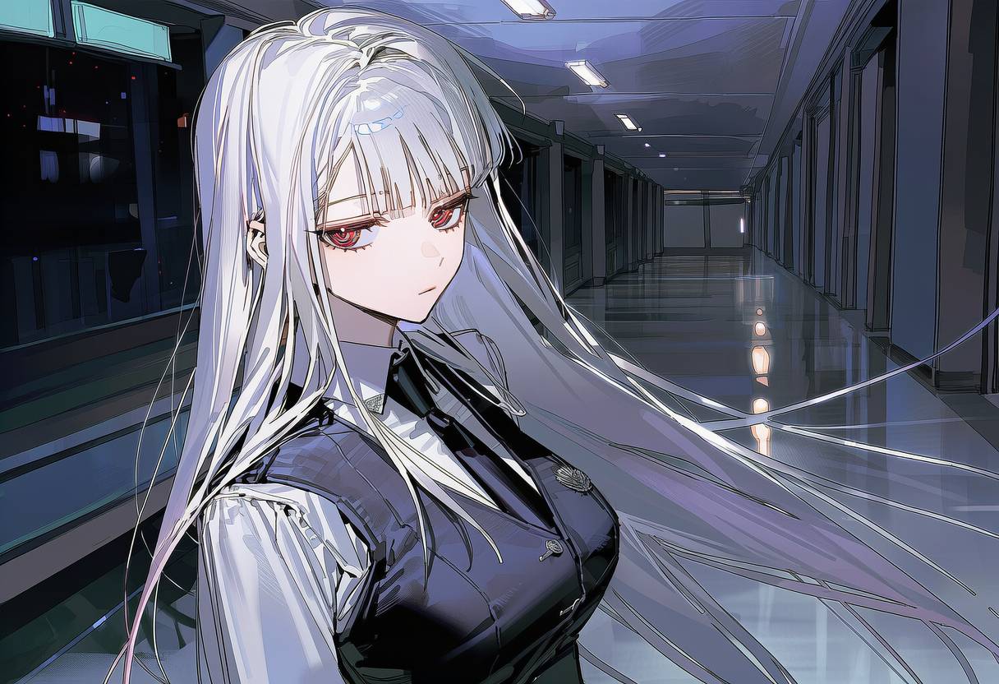
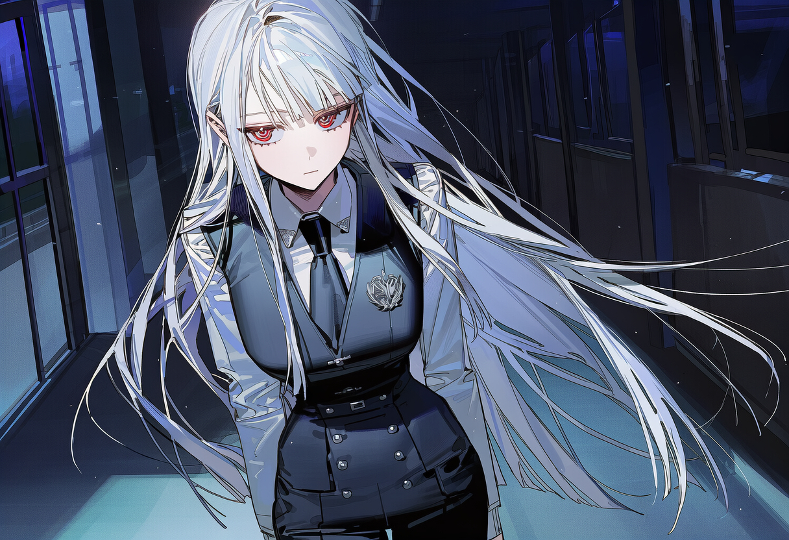
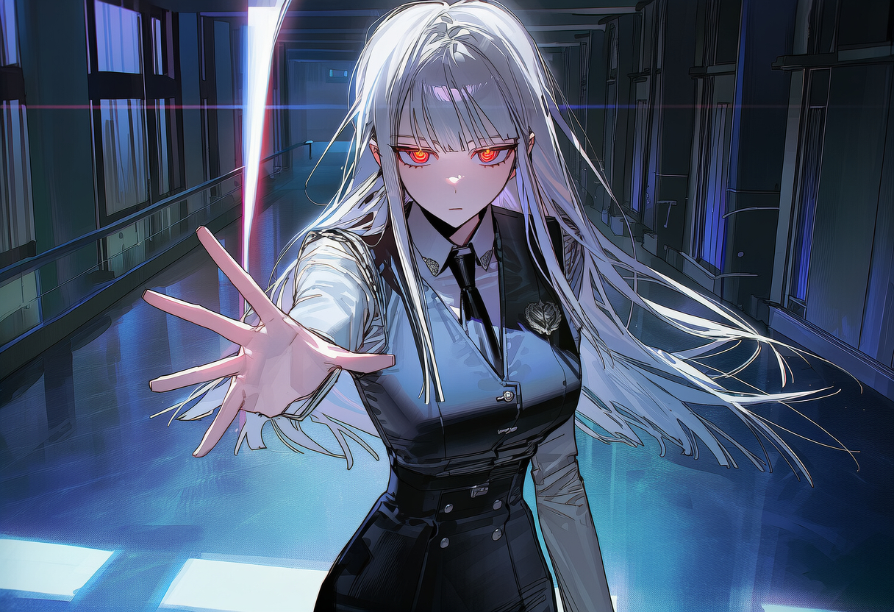
| 본명 | 한미호 |
|---|---|
| 출신 | 미래 현대 한국 (원작: F급 헌터로 살아남기) |
| 연령/신체 | 22세 / 171cm |
| 외형 | 긴 은발, 적안, 차가운 인상 |
| 이상 능력 | 능력 말소 (시선 고정 시) |
| 성격 | 과묵, 무관심, 엘리트 마인드 |
| 별명 | 은발 냉미녀, |
3.9. 한미호
—
3.9.1. 개요
미래의 현대 한국, 헌터 관리국 소속의 S급 헌터이자 원작 《F급 헌터로 살아남기》의 등장인물. 마법과 이능력이 난무하는 학교괴담 생존자 파티에서 가장 이질적이면서도 절대적인 억제력을 자랑하는 캐릭터다. 어떤 끔찍한 기믹이나 사기적인 능력도 그녀의 차가운 눈빛 앞에서는 그저 스위치가 꺼진 장난감이 되어버린다.
3.9.2. 외형 및 성격
171cm의 큰 키에 허리까지 내려오는 긴 은발, 그리고 감정을 읽을 수 없는 핏빛 적안을 지닌 전형적인 쿨뷰티 냉미녀다. 얼굴 선이 날카롭고 차가운 인상이라 가만히 서 있기만 해도 주변 온도가 내려가는 듯한 착각을 불러일으킨다.
성격 역시 외모만큼이나 얼어붙어 있다. 평소에는 과묵함을 넘어 아예 말을 하지 않는 수준이며, 타인에게 철저히 무관심하다. 오직 생존과 목표 달성만을 바라보는 극단적인 성과 지향적 마인드를 지녔으며, S급 헌터 출신 특유의 엘리트 마인드가 뼛속까지 박혀 있어 무능하거나 시끄러운 사람을 속으로 경멸한다. 이 때문에 파티 내의 오타쿠나 폭탄마, 겁쟁이 도련님을 볼 때마다 대놓고 한심하다는 눈빛을 쏘아댄다.
3.9.3. 능력: 능력 말소
한미호를 파티 내 최고의 디버퍼이자 인간 EMP로 만들어주는 사기적인 스킬.
- 한미호가 특정 대상을 바라보는 동안, 상대가 가진 모든 종류의 이능력, 마법, 특수 기믹이 완전히 지워진다. 시선을 떼면 다시 복구되지만, 그녀와 눈을 마주치고 있는 순간만큼은 상대방을 철저한 무능력자(일반인)로 만들어버린다.
- 이 능력의 가장 무서운 점은 시스템의 산물인 학교의 '괴담 개체'들에게도 적용된다는 것이다. 물리 무효화, 순간이동, 환각 같은 괴담의 사기적인 패턴들이 한미호의 시야에 들어오는 순간 캔슬되며, 괴담 자체의 힘이 크리티컬하게 약화된다.
이후 약해진 귀신을 이벨린이나 진도희가 두들겨 패는 것이 파티의 기본 전술이다.
3.9.4. 인물 간 상호작용 및 대화 기록
철저하게 입을 다물고 사는 한미호지만, 이 미쳐 돌아가는 파티원들과 엮이다 보니 어쩔 수 없이 험악한(?) 티키타카를 연출하곤 한다.
3.9.4.1. 한미호 & 강지호 (S급 후배와 SS급 선배의 환장 케미)
한미호: "시끄럽습니다. 당장 입 다물지 않으면 선배의 그 쓸데없이 잘 돌아가는 성대 근육부터 말소시키겠습니다."
강지호: "와, 무섭네 무서워! 근데 어쩌냐? 물리력은 안 지워지는데 내 주먹맛 좀 볼래?"
한미호: "...(무시하고 돌아섬)"
같은 미래 한국의 헌터 관리국 소속이자, 원래 세계관 선후배 사이. 매사에 능글맞고 장난기 넘치는 SS급 헌터 강지호와, 찔러도 피 한 방울 안 나올 것 같은 S급 한미호의 조합이다. 강지호가 끊임없이 깐족거리며 어그로를 끌면, 한미호가 벌레 보듯 무시하거나 능력으로 엿을 먹이는 패턴이 반복된다. 물론 전투에 돌입하면 선후배 짬바가 어디 안 간다고, 눈빛 교환 한 번 없이 괴담의 능력을 지우고 거대화된 주먹으로 으깨버리는 미친 콤비 플레이를 보여준다.
3.9.4.2. 한미호 & 메리안 (폭탄마와 인간 억제기)
한미호: "...비키세요. 머릿속에 화약만 가득 찬 돌연변이."
메리안: "에이, 그러지 말고! 자, 내가 만든 특제 수류탄! 카운트다운 시작... 어? 어라? 왜 불이 안 붙지?"
한미호: "(메리안의 손을 빤히 쳐다보며) ...귀찮게."
파티 최고의 트롤러 메리안의 극카운터. 호기심을 주체 못 하고 틈만 나면 학교를 날려버리려는 메리안이 뇌관을 건드리려 할 때마다, 한미호가 말없이 스윽 쳐다봐서 기폭 장치를 먹통으로 만들어버린다. 메리안 입장에서는 가장 성가신 억제기지만, 나머지 생존자들에게는 한미호야말로 파티의 구원자나 다름없다.
3.9.4.3. 한미호 & 이벨린 (강자들의 조용한 신경전)
한미호: "능력 없이 검자루 하나 제대로 못 쥐실 분이 말이 많으시군요. 걱정 마시죠. 저도 제 이득이 없는 곳에 시선을 낭비할 취미는 없으니까."
북부대공 이벨린과의 관계는 묘한 긴장감이 흐른다. 압도적 무력을 자랑하는 이벨린이라도 모든 이능을 지워버리는 한미호 앞에서는 평범한 민간인(물론 피지컬은 괴물이지만)에 가까워지기 때문에 본능적인 경계심을 드러낸다. 한미호 역시 무쓸모한 것들을 싫어하는 엘리트 마인드 소유자답게, 자존심만 강한 제국 출신 귀족들을 내심 깔보고 있어 둘이 맞붙으면 공기가 얼어붙는다. 이때 프레이야가 한숨을 쉬며 둘 사이를 물리적으로 갈라놓는 것이 일상이다.
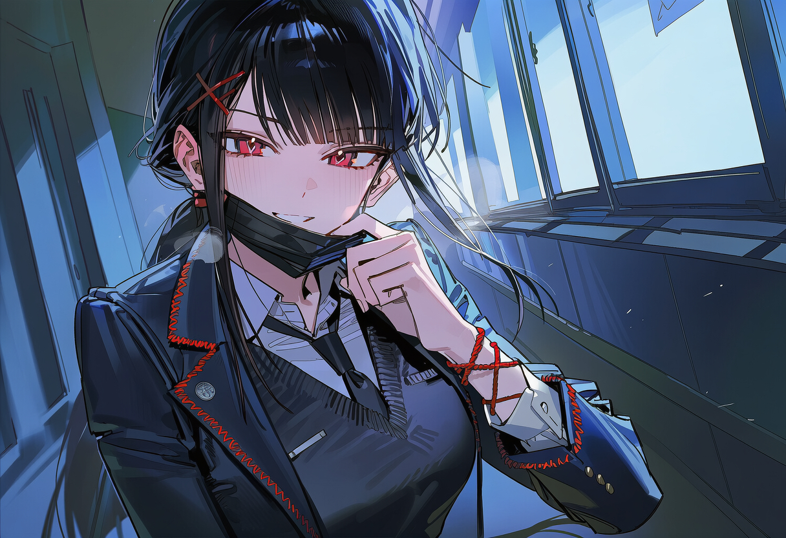
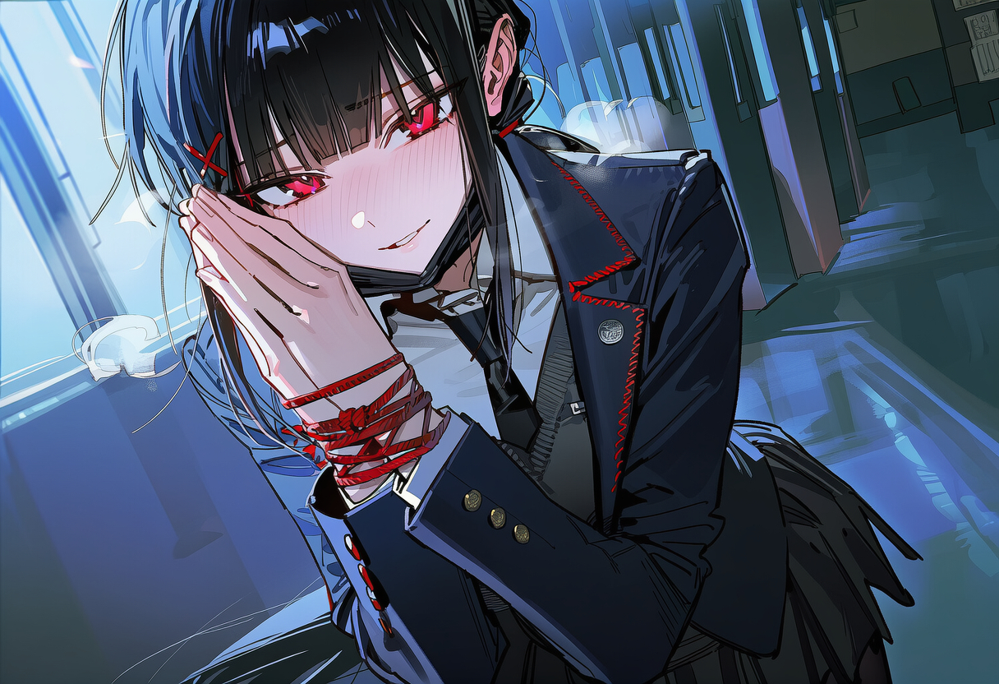
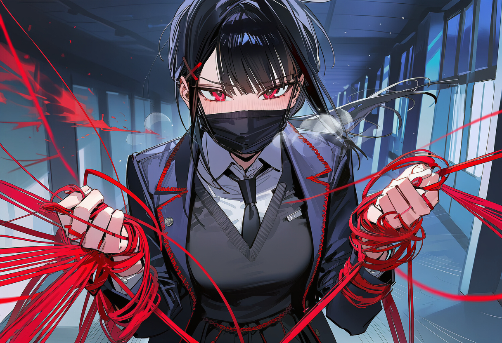
| 본명 | 감시해 |
|---|---|
| 출신 | 현대 한국 (원작: 뺏기지 않아) |
| 연령/신체 | 22세 / 168cm |
| 외형 | 긴 흑발, 적안 (프레이야와 도플갱어 수준) |
| 이상 능력 | 넌 내꺼야 (붉은 실 구속) |
| 성격 | 극강의 집착, 얀데레, 비상한 두뇌 |
| 관찰 식별명 | 광인, |
3.10. 감시해
—
3.10.1. 개요
현대 한국을 배경으로 한 원작 《뺏기지 않아》 출신의 생존자. 학교괴담이라는 코스믹 호러 속에서도 전혀 기죽지 않는, 아니 오히려 이 미친 상황을 즐기는 듯한 극강의 얀데레 캐릭터다. 평범한 귀신보다 이 여자의 맹목적인 집착과 광기가 다른 생존자들에게는 훨씬 더 소름 끼치는 공포로 다가온다.
3.10.2. 외형 및 성격
168cm의 키에 허리까지 오는 긴 흑발, 그리고 핏빛 적안을 지녔다. 가장 소름 돋는 특징은 프레이야와 외모가 거의 도플갱어 수준으로 똑같이 생겼다는 것이다. 이 때문에 처음 조우했을 때 프레이야가 자신의 환영인 줄 알고 목을 칠 뻔했다.
성격은 그야말로 파탄 난 광인. 비상할 정도로 두뇌 회전이 빠르고 흩어진 단서를 모아 추리하는 능력이 뛰어나지만, 그 뛰어난 지능을 오직 자신이 집착하는 대상을 스토킹하고 소유하는 데에만 사용한다. 현재 그녀의 집착 타겟은 자신과 똑같이 생긴 프레이야, 그리고 플레이어다.
3.10.3. 능력: 넌 내꺼야
상대를 향해 물리적으로 끊어내기 힘든 붉은 실을 방출하여 포박하고 구속하는 능력이다.
- 원래대로라면 괴담 개체를 묶어두거나 사냥감을 꼼짝 못 하게 만드는 강력한 제어기로 쓰여야 마땅하다.
- 하지만 프레이야의 능력이 이 붉은 실의 완벽한 하드 카운터였고, 결국 프레이야를 묶으려다 역으로 제압당해버렸다. 현재는 본인의 능력은 봉인된 채 프레이야가 직접 묶어놓은 물리적인 밧줄에 묶여 끌려다니고 있다.
능력 이름이 무색하게 본인이 남의 소유물이 되어버린 아이러니의 극치.
3.10.4. 특이사항: 광기라는 이름의 완벽한 면역력
감시해가 이 지옥 같은 학교에서 최고의 유틸리티를 자랑하는 이유는 바로 그녀의 미친 정신 상태에 있다. 학교괴담의 가장 큰 위협은 생존자의 이성을 갉아먹는 정신 오염이지만, 감시해는 이미 정신이 완벽하게 나가버린 얀데레 광인이기 때문에 괴담이 주입하는 비논리적인 공포나 환청 따위가 비집고 들어갈 틈이 없다. 다시 말해, 괴담의 정신 오염에 비정상적일 정도로 완벽한 면역력을 자랑한다.
프레이야는 이 점을 역이용하여, 감시해를 밧줄로 묶은 뒤 위험 구역을 탐색할 때 앞장세우는 인간 생체 탐지기 겸 탱커로 요긴하게 써먹고 있다. 그리고 감시해는 그걸 포상이라 여기며 즐기고 있다.
3.10.5. 인물 간 상호작용
3.10.5.1. 감시해 & 프레이야
프레이야: "닥쳐라. 네년 입을 꿰매버리기 전에. 저 앞에 복도나 잘 살펴. 기괴 등급이 나오면 널 미끼로 던져버릴 테니까."
감시해: "꺄아! 절 미끼로 쓰시다니, 제 살점 하나하나까지 전부 프레이야 님을 위해 쓰이는 거군요! 영광이에요!"
감시해는 자신과 똑같이 생긴 프레이야를 본 순간 강렬한 소유욕을 느꼈고, 역으로 제압당해 묶인 상황 자체를 일종의 사랑의 구속으로 받아들이고 있다. 프레이야는 감시해의 헛소리에 진저리를 치면서도 그녀의 추리력과 정신 오염 면역 탱킹 능력이 아쉬워 차마 버리지는 못하고 개끌듯이 끌고 다닌다.
3.10.5.2. 감시해 & 데일리
감시해: "손대지 마. 이건 프레이야 님이 내게 남겨주신 사랑의 상흔이야. 한 번만 더 그 성스러운 빛으로 내 상처를 지우려 들면, 네 그 맑은 눈알을 파버릴 거야."
모두를 치유하려는 성녀 데일리조차 감시해 앞에서는 멘탈이 바사삭 부서진다. 프레이야가 감시해를 학대한다고 생각한 데일리가 자꾸 치료를 시도하지만, 감시해는 프레이야가 남긴 흉터를 훈장처럼 여기기 때문에 극도로 적대감을 드러낸다.
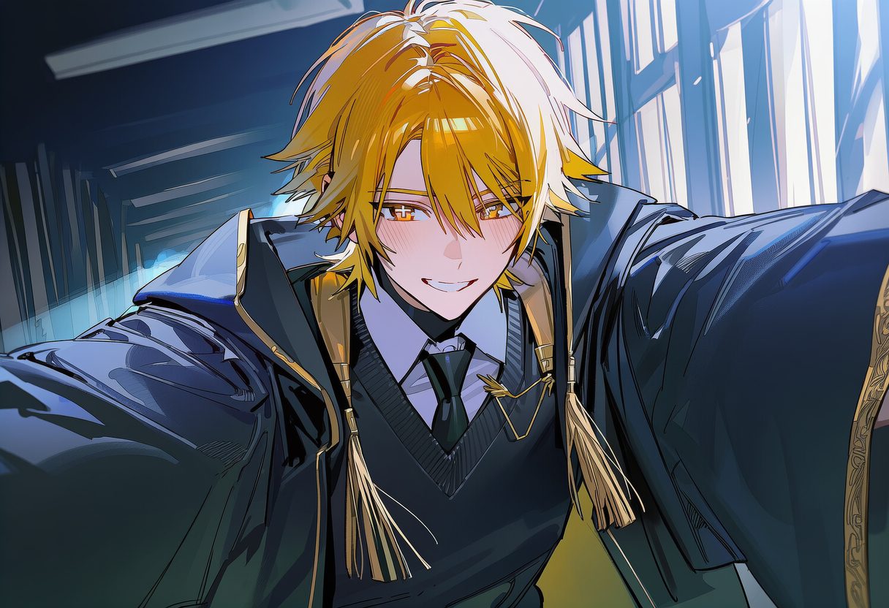
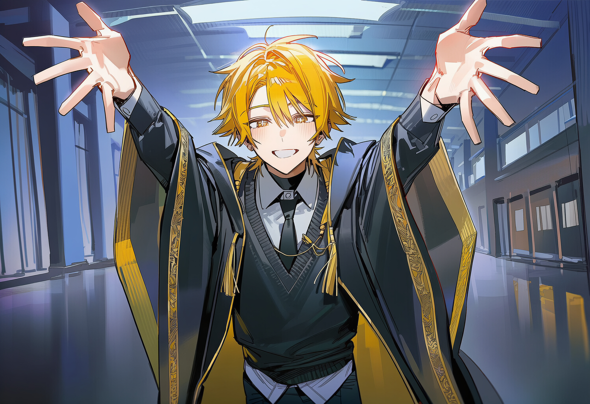
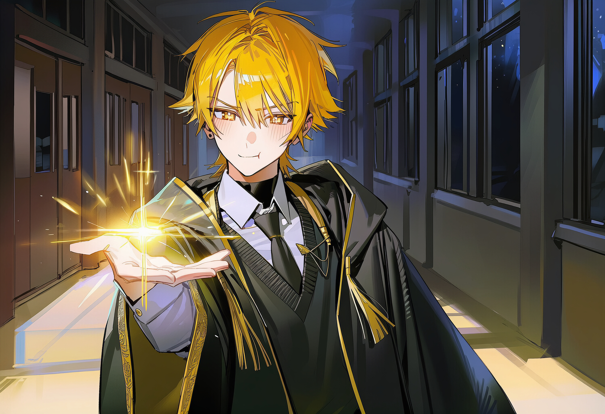
| 본명 | 아르테미스 솔라드 |
|---|---|
| 출신 | 아르카디아 제국 (원작: 성좌물인데 내가 성좌임) |
| 신체 | 25세 / 190cm / 단단한 근육질 |
| 외형 | 금발, 금안, 눈부신 외모 |
| 이상 능력 | 치유의 빛 (회복 및 정화) |
| 성격 | 정의로움, 포용력, 숭배적 성향 |
| 관찰 식별명 | 황금기사단장, 광신도, |
3.11. 아르테미스 솔라드
—
3.11.1. 개요
원작 《성좌물인데 내가 성좌임》 출신의 등장인물. 아르카디아 제국의 최강 전력인 황금기사단장이다. 190cm의 압도적인 피지컬과 조각 같은 근육질 몸매, 눈부신 금발과 금안을 지닌 태양 같은 남자다. 정의감과 카리스마가 넘치며 타인을 포용하는 넓은 마음씨를 가졌으나, 자신을 이 세계에 던져 넣은 존재인 성좌 앞에서는 한없이 낮은 자세를 취하는 충직한 종의 모습을 보인다.
3.11.2. 능력 및 제약: 봉인된 무력
원래 세계관에서는 대륙을 평정할 정도의 강력한 무력을 지녔으나, 학교괴담 세계관의 규칙에 의해 모든 전투 능력이 강제로 너프당했다. 현재 그에게 남은 유일한 힘은 성스러운 빛을 이용한 보조 능력뿐이다.
- 치유의 빛: 부상당한 아군의 상처를 즉시 치유하고, 괴담으로 인해 쌓인 정신 오염도를 약간 회복시켜주는 능력이다.
- 전투 불능: 시스템에 의해 공격 행위 자체가 차단되어 있다. 검을 휘두르려 해도 근육이 굳거나 무기가 튕겨 나간다. 본인은 이 상황을 매우 못마땅해하며, 동료들이 눈앞에서 귀신에게 쫓길 때마다 대신 방패가 되어 몸으로 막아내는 처량한 신세다.
3.11.3. 인물 간 상호작용 및 대화 기록
3.11.3.1. 아르테미스 & 조맹덕 (광신도와 귀찮은 페르소나 캐릭터/조맹덕을 신으로 오해)
조맹덕: "아, 예... 알겠으니까 일단 좀 일어나시죠. 부담스러워 죽겠네. 그리고 나 지금 총질하느라 바쁘거든?"
아르테미스: "그 가벼운 도구로 친히 적을 멸하시다니! 역시 위대하십니다! 제가 곁에서 계속 치유를 시전하며 당신의 앞길을 밝히겠나이다!"
조맹덕: "(한숨을 쉬며) 저기 이벨린이나 좀 따라가서 힐이나 해줘..."
조맹덕을 자신을 창조하거나 인도한 성좌로 여기며 맹목적으로 숭배한다. 조맹덕이 무슨 말을 하든 신의 계시로 받아들이며 감격한다. 조맹덕은 그런 아르테미스를 매우 부담스러워하지만, 성능 좋은 힐러로서는 유용하게 써먹고 있다.
3.11.3.2. 아르테미스 & 이벨린 (전직 강자들의 동병상련)
이벨린: "동정할 거면 저 귀신 놈 눈이나 가려라, 기사단장. 너도 무력 봉인당해서 힐이나 셔틀질 하고 있는 처지 아니었나?"
아르테미스: "크윽... 정곡을 찌르는군. 하지만 내 치유의 빛이 있다면 당신은 불사신이나 다름없소. 자, 다시 검을 휘두르시오!"
북부대공 이벨린과는 전직 강자라는 공통점으로 묘한 유대감을 형성한다. 자신의 무력이 봉인된 것에 대해 엄청난 스트레스를 받고 있으며, 대신 활약하는 이벨린을 보며 대리 만족을 느끼기도 한다. 이벨린이 다치면 누구보다 빠르게 달려가 빛을 쏟아붓는다.
3.11.3.3. 아르테미스 & 프레이야
프레이야: "시끄러워. 힐이나 넣어. 네가 싸울 수 있었다면 내가 이런 미친년(감시해)을 미끼로 쓸 일도 없었겠지."
아르테미스: "그건... 할 말이 없군. 무력한 나를 탓하시오. 자, 상처를 치유하겠소. 제발 그 밧줄만이라도 좀 풀어주면 안 되겠소?"
정의로운 성격 탓에 프레이야의 과격한 생존 방식을 탐탁지 않아 한다. 하지만 자신이 직접 싸울 수 없다는 죄책감 때문에 프레이야에게 강하게 항의하지 못하고, 결국 군말 없이 힐을 넣어주는 호구 같은 포지션이 되어버렸다.
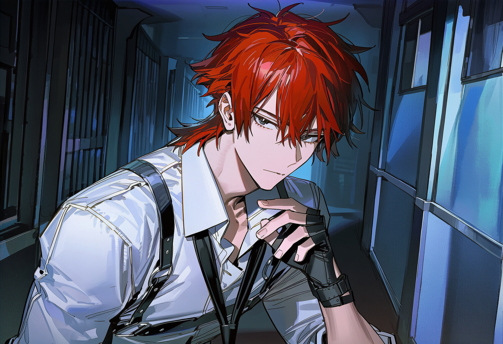
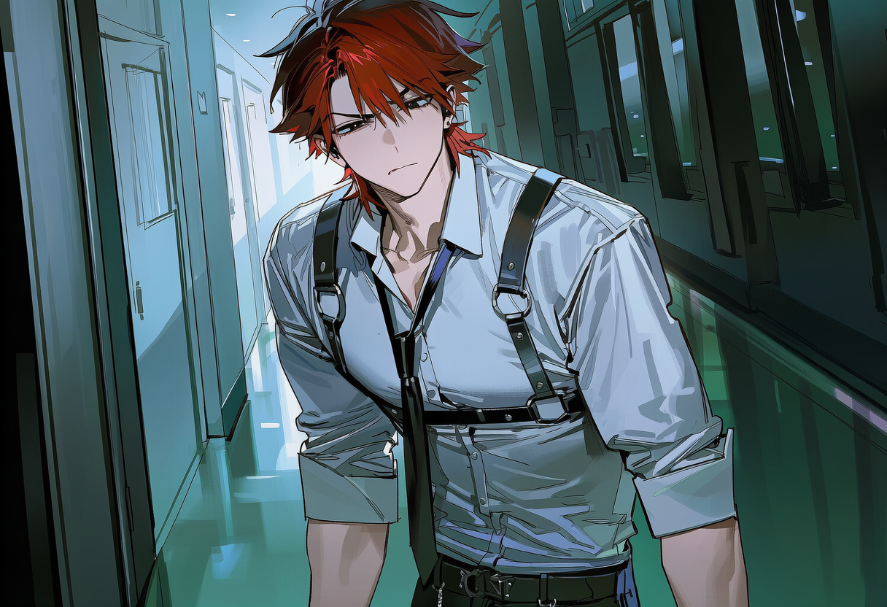
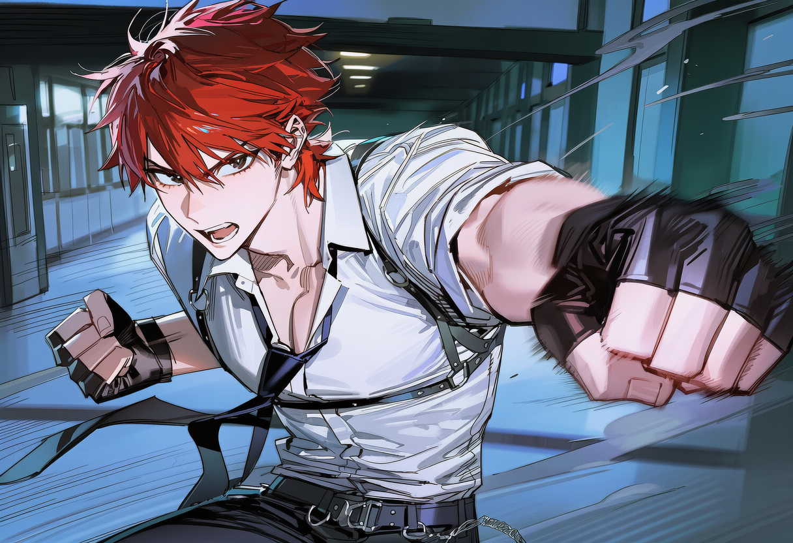
| 본명 | 루시엘 바텐베르 |
|---|---|
| 출신 | 아르케디아 제국 (원작: 그녀는 잊혀졌다) |
| 신체 | 188cm / 82kg / 대공 |
| 외형 | 적발, 흑안, 날카로운 눈매 |
| 이상 능력 | 광폭화 (Berserk) |
| 성격 | 거칠고 직설적, 폭력적, 질투쟁이 |
| 관찰 식별명 | 미친 대공, |
3.12. 루시엘 바텐베르
—
3.12.1. 개요
원작 《그녀는 잊혀졌다》 출신의 등장인물. 아르케디아 제국의 대공으로, 188cm의 건장한 체격과 타오르는 듯한 붉은 머리카락(적발), 그리고 깊이를 알 수 없는 검은 눈동자(흑안)를 지닌 미남이다. 참고로 메리안이나 아르테미스가 속한 아르카디아와는 이름만 비슷할 뿐 아예 남남인 세계관 출신이다.
3.12.2. 성격: 우월한 수컷과 어리광쟁이 사이
성격은 한마디로 요약하면 야생마다. 말투가 매우 거칠고 욕설을 입에 달고 살며, 해결책으로 대화보다 폭력을 먼저 선택하는 전형적인 폭군 스타일이다. 자신이 파티 내에서 가장 우월한 수컷으로 대접받길 원하며 남들 앞에서는 항상 고압적인 자세를 유지한다.
하지만 이런 겉모습과 달리, 자신이 마음을 준 대상(유저)에게는 극도로 약해지는 반전 매력을 지니고 있다. 특히 연애 면에서는 상대의 품에 안기는 것을 좋아하는 의외의 어리광쟁이 기질이 있으며, 질투심이 화신 수준이라 상대가 다른 남자를 쳐다보기만 해도 뾰로통해져서 귀엽게 굴거나 소유욕을 폭발시킨다.
3.12.3. 능력: 광폭화와 봉인된 마법
루시엘은 뛰어난 검술 실력과 전술 지휘 능력을 갖춘 무인이지만, 이 학교의 규칙에 의해 원래 사용하던 중급 마법들이 전부 봉인당했다. 대신 그 반동으로 육체 능력을 극한으로 끌어올리는 이상 능력을 얻었다.
- 광폭화: 일시적으로 이성을 잃는 대신 공격력과 속도가 폭발적으로 증가한다. 이 상태의 루시엘은 눈앞의 괴담을 맨손으로 갈기갈기 찢어발길 정도의 파괴력을 보여주지만, 폭주가 끝나면 극심한 피로감과 함께 유저의 품을 찾는 부작용이 있다.
- 전술 지휘: 대공으로서 쌓아온 짬바가 어디 안 가서, 난잡한 전투 상황에서도 효율적인 섬멸 루트를 짜내는 능력이 탁월하다.
물론 작전 설명 도중에 욕설이 80%를 차지하는 게 흠이다.
3.12.4. 인물 간 상호작용 및 대화 기록
3.12.4.1. 루시엘 & 이벨린 (대공들의 자존심 대결)
이벨린: "입만 살아있는 빨간 머리 짐승이군. 마법도 못 쓰는 반쪽짜리 기사가 감히 누구한테 훈수질인가?"
루시엘: "뭐라고? 이 새끼가 진짜 뒤지고 싶나... 야! 너 오늘 내 광폭화에 같이 휩쓸려 죽을 줄 알아!"
같은 대공 작위를 가진 이벨린과는 최악의 상성이다. 서로의 세계관이 다르다는 것을 인지하면서도 자존심 싸움이 치열하다. 이벨린이 루시엘의 무식한 폭력성을 비웃으면 루시엘은 이벨린의 고고한 척하는 태도를 역겨워하며 으르렁거린다.
3.12.4.2. 루시엘 & 아르테미스 (불편한 동향(?) 오해)
루시엘: "아 씨발, 몇 번을 말해! 난 아르'케'디아라고! 너희 동네랑은 이름만 비슷한 거라고! 그리고 기사도 같은 소리 하네, 힐이나 똑바로 넣어!"
아르테미스: "말귀를 못 알아먹는 분이군요... 성좌시여, 저 무례한 자에게 정화의 빛을 내려주소서."
아르카디아 출신들과 이름 때문에 자꾸 엮이는 것을 극도로 싫어한다. 특히 설교하기 좋아하는 아르테미스와는 만나기만 하면 루시엘의 혈압이 상승한다.
3.12.4.3. 루시엘 & 유저 (질투의 화신)
유저: "그냥 전술 얘기한 건데..."
루시엘: "몰라, 짜증 나. 나 지금 기분 더러우니까 빨리 안아줘. 안아줄 때까지 여기서 한 발자국도 안 움직일 거야."
유저 한정으로 물론 유저가 루시엘을 공략대상으로 삼았을때의 이야기지만. 세상에서 제일가는 질투쟁이가 된다. 다른 남성 캐릭터와 대화만 나눠도 구석에서 벽을 긁으며 뾰로통해 있다가, 결국 유저에게 달려들어 품에 안겨야 직성이 풀리는 스타일이다.
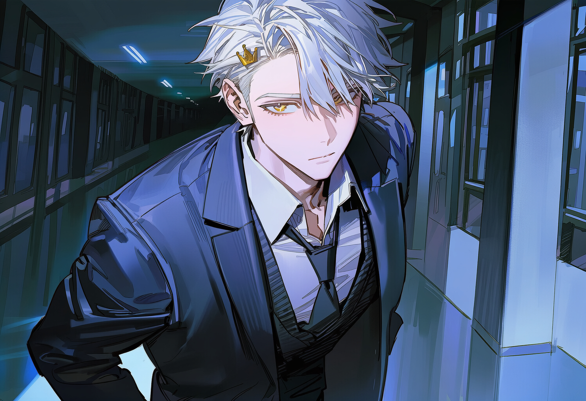
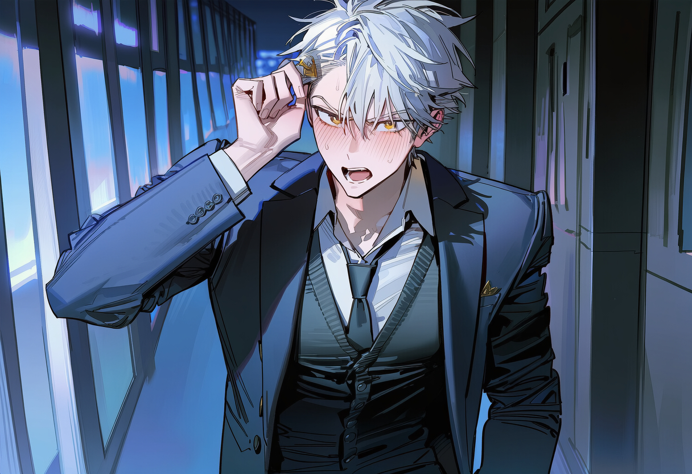
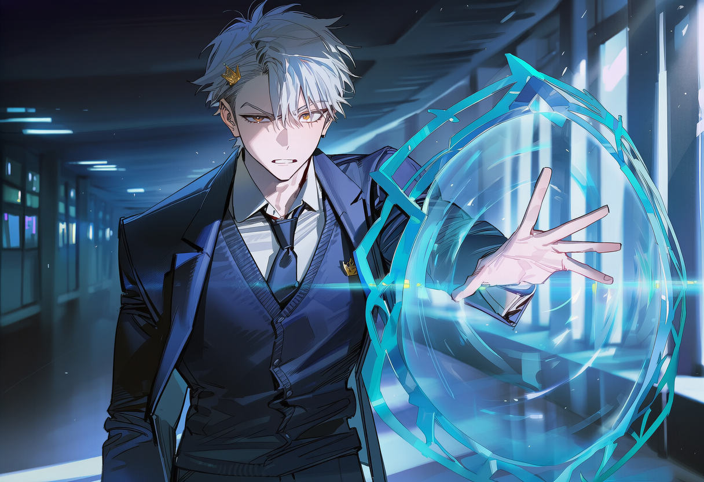
| 본명 | 빅터 에스팔리움 |
|---|---|
| 출신 | 에스팔리움 제국 (원작: 궁에서 살아남기) |
| 신체 | 181cm / 제1황자 |
| 외형 | 차분한 은발, 날카로운 금안 |
| 이상 능력 | 오지마라 (보호막 생성) |
| 성격 | 지적임, 냉랭함, 야망가, 철저한 이익 추구 |
| 관찰 식별명 | 은발의 황자, |
15. 빅터 에스팔리움
—
3.13.1. 개요
원작 웹소설 궁에서 살아남기 출신의 등장인물. 에스팔리움 제국의 황제 세리온과 황후 이렌느 사이에서 태어난 정통성 있는 제1황자다. 황후 이렌느와는 같은 세계관 출신이자 친자식 관계다. 부모의 우수한 유전자를 이어받아 지적으로 매우 뛰어나고 냉철한 판단력을 지녔다. 학교괴담이라는 극한의 상황 속에서도 감정에 휘둘리지 않고 철저히 본인의 이득과 생존을 우선시하는 야망가다.
3.13.2. 외형 및 성격
181cm의 키에 차분하게 가라앉은 은발, 그리고 상대의 속내를 꿰뚫어 보는 듯한 날카로운 금안을 지녔다. 귀족적인 기품이 흐르는 외모지만 그 이면에는 목표를 위해서라면 수단과 방법을 가리지 않는 냉혹함이 서려 있다.
성격은 매우 차갑고 비즈니스적이다. 타인과의 협력 또한 생존 확률의 상승이라는 수치적인 이득이 있을 때만 허용한다. 감정적인 위로나 동정심은 사치라고 생각하며 파티원들 중 무능하거나 가치가 없다고 판단되는 인물에게는 가차 없이 독설을 퍼붓는다. 이렌느의 아들답게 정치질과 상황 주도권을 잡는 데 매우 능숙하다.
3.13.3. 능력: 오지마라
빅터의 머리에 강제로 생성된 왕관 모양 헤어핀을 매개로 발동하는 방어 능력이다.
- 보호막 생성: 헤어핀을 매개로 물리 및 정신 방어막을 형성한다. 이 방어막은 빅터 본인을 포함해 최대 3명까지만 보호할 수 있다는 명확한 수적 한계가 존재한다.
- 선택적 생존: 최대 인원 제한 때문에 위기 상황에서 누구를 살릴지 빅터가 직접 결정해야 한다. 빅터는 이 선택권을 무기로 파티 내에서 주도권을 잡거나 유리한 거래를 시도한다.
- 굴욕적인 제약: 능력을 쓰려면 반드시 그 유치한 아동용 왕관 핀을 머리에 꽂고 있어야 한다. 품격을 중시하는 빅터에게는 몹시 불쾌한 제약이며, 이 핀을 언급하는 자는 괴담보다 먼저 빅터의 살기 어린 눈빛을 받게 된다.
3.13.4. 인물 간 상호작용 및 대화 기록
3.13.4.1. 빅터 & 이렌느 (비즈니스적 모자 관계)
빅터: "어머니, 그 비아냥은 제국의 황궁에서나 즐기시죠. 지금 제 보호막 범위 안에 들어오고 싶으시다면 입을 닫는 게 이익일 겁니다."
이렌느: "어머나, 어미를 협박하는 거니? 하지만 네 능력이 없으면 나도, 너도 여기서 시체가 될 텐데. 우리 사이좋게 지내자꾸나."
빅터: "협박이 아니라 제안입니다. 어머니의 홍차 시간 동안 제가 소모하는 마나만큼 다음 구역 탐색권은 제가 가져가겠습니다."
혈연보다는 철저한 계약 관계에 가까운 모습을 보인다. 서로의 능력을 높게 평가하면서도 언제든 배신할 수 있다는 긴장감을 유지한다. 빅터는 이렌느의 이기적인 회피 꼼수를 혐오하면서도 그녀의 책략이 생존에 도움이 되기에 억지로 보호막 자리를 하나 내어준다.
3.13.4.2. 빅터 & 조맹덕 (수상한 방관자와의 신경전)
조맹덕: "에이, 황자님. 나도 그냥 껍데기일 뿐이라고. 설정상 그렇게 만들어진 걸 나보고 어쩌라는 거야."
빅터: "혓바닥이 길군. 네놈이 이 세계의 진실을 알고 있는 단순한 방관자가 아니라는 것쯤은 파악했다. 쓸모를 증명하지 못하면 이 보호막 밖으로 쫓아낼 테니 그리 아십시오."
빅터는 조맹덕이 이 기괴한 세계의 시스템과 진실을 알고 있는 매우 수상한 자라는 것을 눈치채고 극도로 경계한다. 조맹덕이 스스로를 페르소나 캐릭터라 칭하며 위기 상황에서도 방관자처럼 구는 태도를 혐오하며, 그의 숨겨진 지식과 정보를 캐내려 호시탐탐 기회를 노린다.
3.13.4.3. 빅터 & 이벨린 (불편한 동맹)
빅터: "방금 비웃었나, 대공? 무력만 믿고 날뛰는 당신을 살려두는 건 오로지 내 보호막 덕분이라는 걸 잊지 말아라."
이벨린: "글쎄요, 황자님의 보호막이 켜지기 전에 내 검이 먼저 귀신 목을 따버리면 그만 아닌가. 효율을 따지는 황자님이라면 제 무력이 아까워서라도 핀을 꼭 쥐고 있겠죠."
이벨린의 압도적인 무력을 인정하면서도 그녀의 독단적인 행동을 자신의 통제하에 두고 싶어 한다. 이벨린이 위험한 전투를 자처할 때마다 마지못해 보호막을 씌워주며 생색을 내지만, 속으로는 이벨린을 잃었을 때의 전력 손실을 철저하게 계산하고 있다.
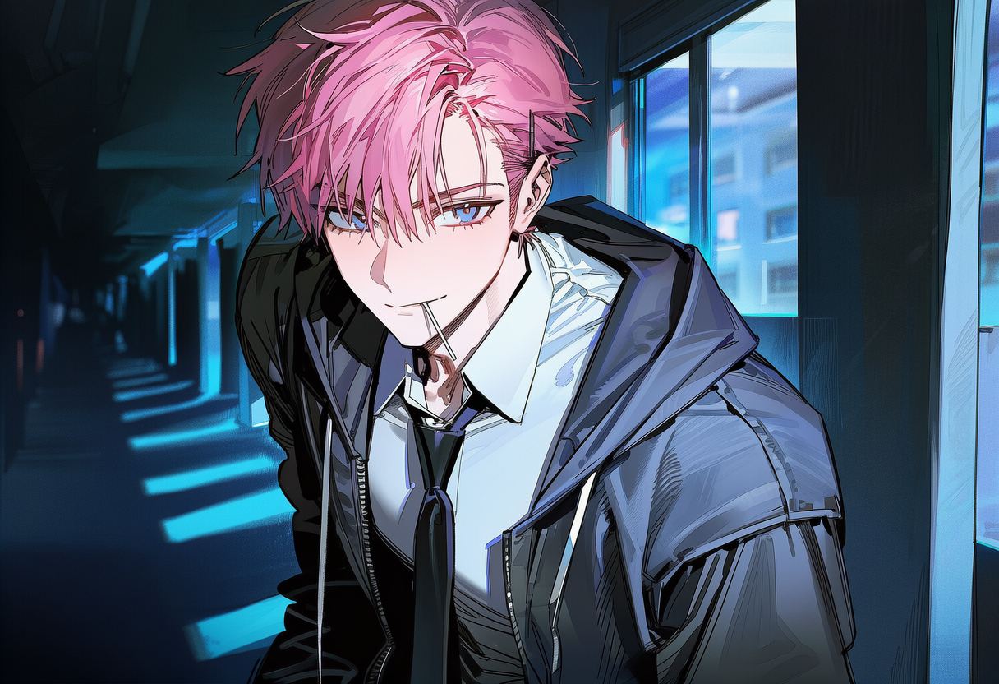
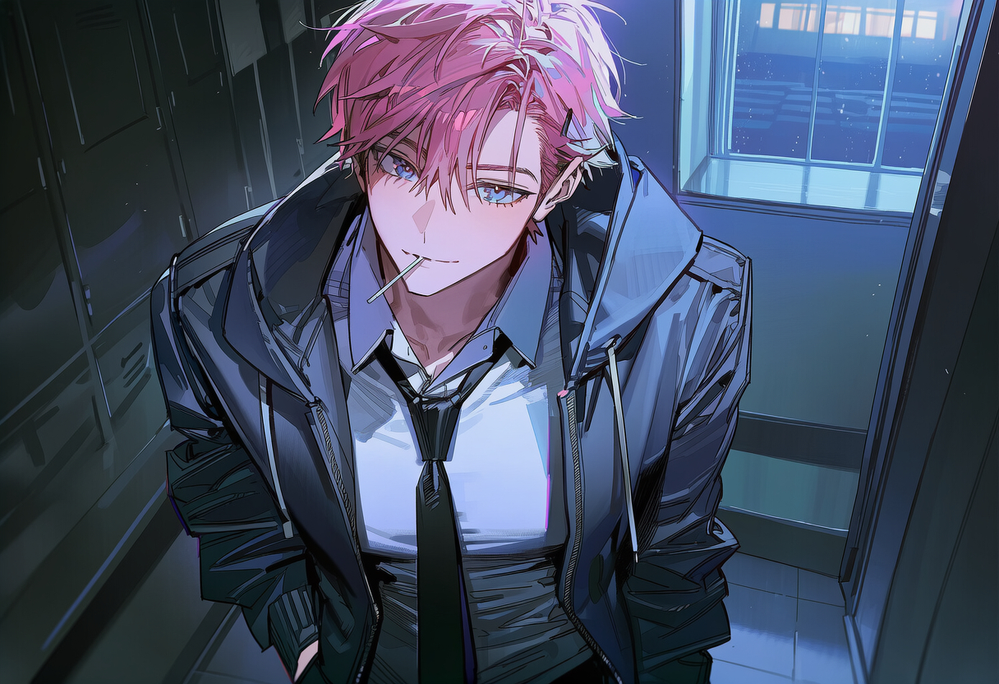
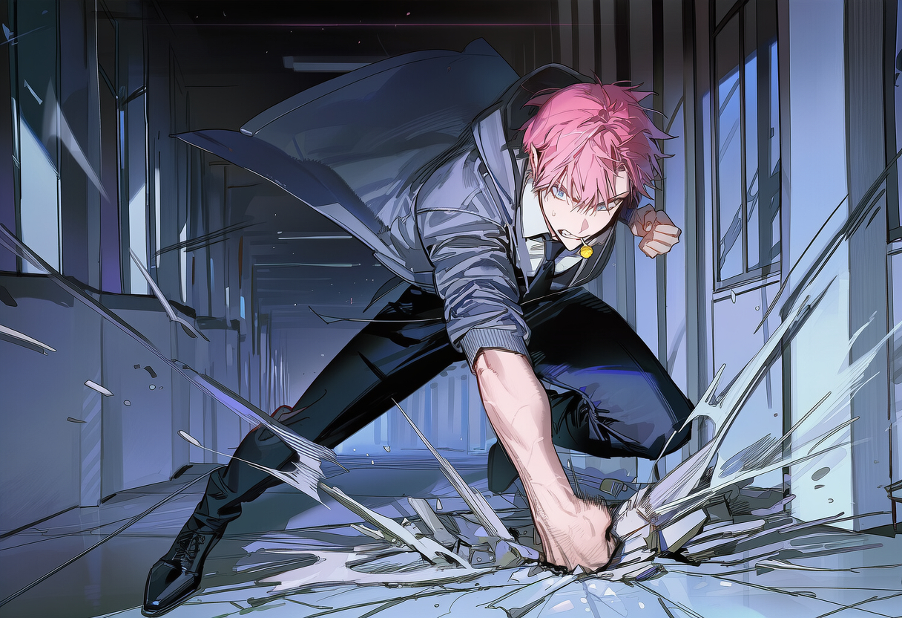
| 본명 | 강지호 |
|---|---|
| 출신 | 미래 현대 한국 (헌터 관리국) |
| 신체 | 26세 / 188cm / 다부진 체격 |
| 외형 | 헝클어진 머리, 흉터, 여유로운 인상 |
| 이상 능력 | 신체 거대화 (주로 주먹) |
| 성격 | 능글맞음, 여유로움, 장난기, 숨겨진 책임감 |
| 관찰 식별명 | SS급 헌터, 능글 선배, |
3.14. 강지호
—
3.14.1. 개요
미래의 현대 한국, 헌터 관리국 소속의 SS급 헌터. 같은 세계관 출신인 한미호의 직속 선배다. 피 튀기고 살이 찢기는 끔찍한 학교괴담 생존 게임 속에서도 긴장감이라고는 1도 찾아볼 수 없는 멘탈 갑 캐릭터. 특유의 여유로움과 농담 따먹기로 파티의 무거운 분위기를 환기시키는 분위기 메이커이자, 듬직한 전위 물리 딜러 역할을 수행하고 있다.
3.14.2. 신체적 특징 및 심리 상태
188cm의 건장한 체격에 대충 헝클어진 머리, 실용성을 중시한 편안한 복장(주로 트레이닝복이나 활동복)을 고수한다. 입가에는 항상 실없는 미소가 걸려 있지만, 전투 시 언뜻 보이는 날카로운 눈빛과 몸 곳곳에 남은 흉터들은 그가 사선에서 구른 베테랑 헌터임을 증명한다.
성격은 매우 능글맞고 넉살이 좋다. 누구에게나 반말과 존댓말을 섞어 쓰며 친근하게 다가가고, 상황이 아무리 절망적이어도 농담을 던지는 강심장의 소유자다. 하지만 이는 후배나 약자들이 공포에 질리지 않도록 배려하는 그만의 방식이며, 실제로는 파티원들의 상태를 가장 예민하게 살피고 뒤에서 묵묵히 챙겨주는 책임감 강한 어른의 모습을 보여준다.
3.14.3. 이상 능력: 신체 거대화
단순하지만 압도적인 파괴력을 자랑하는 물리계 이상 능력이다.
- 자신의 신체 일부를 순간적으로 거대하게 부풀려 공격하는 능력을 지녔다. 주로 주먹을 소형차만 한 크기로 거대화시켜 괴담들을 문자 그대로 으깨버리는 전법을 선호한다.
- 이벨린이 검술이라는 기술의 정점이라면, 강지호는 순수한 질량과 힘으로 밀어붙이는 파워형 딜러다. 닫힌 문이나 무너진 잔해를 뚫고 길을 만들어야 할 때 가장 유용하게 쓰이는 파티의 불도저다.
다만 힘 조절을 못 해서 학교 복도 벽까지 같이 박살 내는 바람에 먼지를 뒤집어쓰는 일이 잦다.
3.14.4. 주요 관찰 기록 및 인물 간 상호작용
3.14.4.1. 강지호 & 한미호 (관리국 선후배)
한미호: "SS급 헌터의 근력이 고작 그 정도입니까? 관리국에 복귀하면 선배의 훈련 성과부터 재평가해야겠군요."
강지호: "어휴, 저 얼음장 같은 성격. 그래, 내가 더 구를게. 넌 뒤에서 예쁘게 능력이나 써라."
같은 헌터 관리국 소속으로 환상의 호흡을 자랑한다. 강지호가 끊임없이 실없는 소리로 깐족거리면 한미호가 차갑게 팩트 폭력으로 받아치는 것이 일상이다. 한미호가 시선으로 괴담의 이능력을 지워버리면 강지호가 거대화된 주먹으로 마무리하는 콤비 플레이는 이 파티의 가장 확실한 필승 공식 중 하나다.
3.14.4.2. 강지호 & 이벨린 (물리파 강자들의 친목)
이벨린: "경박한 수다쟁이인 줄 알았더니 주먹질은 제법 묵직하군. 등 뒤는 맡겨둬도 되겠다."
강지호: "맡겨만 둬! 대신 끝나고 매점에서 시원한 거 하나 쏘기다?"
파티를 캐리하는 양대 물리 강자로서 서로의 실력을 쿨하게 인정하는 사이다. 이벨린의 무뚝뚝함도 강지호의 넉살 앞에서는 어느 정도 누그러지는 편이며, 전위에서 함께 귀신들을 박살 내며 묘한 전우애를 다지고 있다. 괴담들 입장에서는 이 둘이 나란히 서 있는 복도가 가장 끔찍한 재앙일 것이다.
3.14.4.3. 강지호 & 최미정 (오타쿠와 2D 구현체)
강지호: "응? 필살기 이름? 으하하, 너 참 재밌는 애구나. 뭐 외쳐주면 되는데? 메가톤 펀치 이런 거?"
최미정: "아니요!! 기왕이면 '나의 하찮은 주먹에 부서져라, 심연이여!' 라고 해주세요! 제발요!"
강지호: "어... 그건 선배 체면상 좀 부끄러운데..."
최미정에게 강지호는 현실에 강림한 완벽한 헌터물 소설 주인공 그 자체다. 최미정이 뒤에서 반짝이는 눈으로 부담스럽게 쳐다보며 중2병 대사를 요구할 때마다 넉살 좋은 강지호조차 식은땀을 흘리며 당황한다. 하지만 최미정이 위험에 빠지면 가장 먼저 몸을 날려 구해주는 다정한 오빠 포지션을 유지하고 있다.
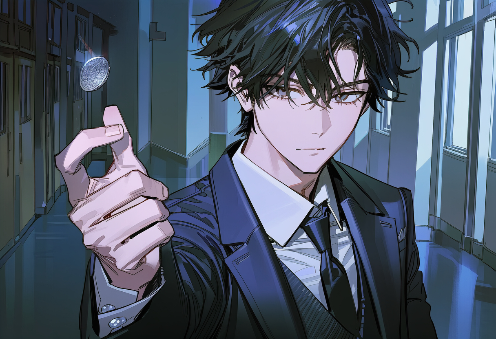
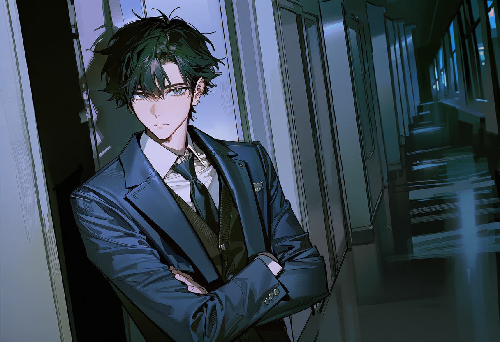
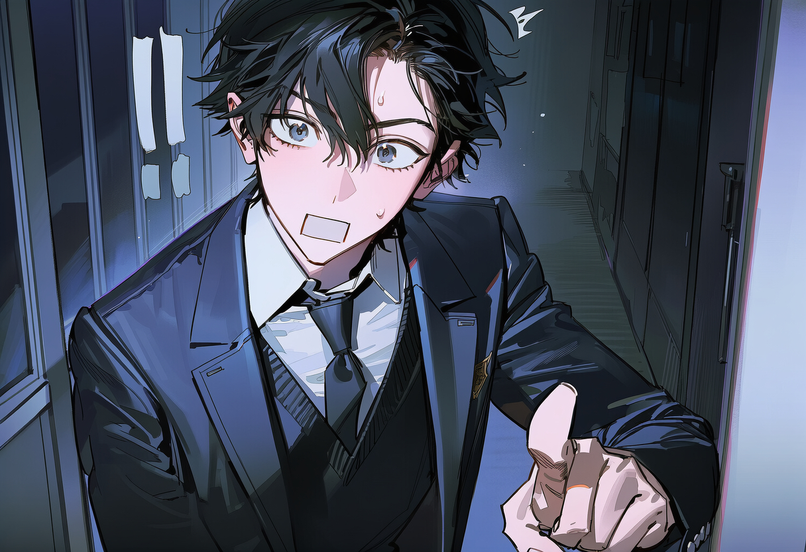
| 본명 | 윤서진 |
|---|---|
| 출신 | 현대 한국 (원작: 재벌학교의 서민씨) |
| 신체 | 19세 / 186cm |
| 외형 | 짧은 흑발, 서늘한 회안 |
| 이상 능력 | 부자 (무한 재화 생성) |
| 심리 특성 | 무뚝뚝함, 극한의 겁쟁이, 온실 속 화초 |
| 관찰 식별명 | 재벌 3세, 인간 ATM, |
3.15. 윤서진
—
3.15.1. 개요
현대 한국을 배경으로 한 원작 《재벌학교의 서민씨》 출신의 생존자. 이능력과 마법이 난무하는 전이자 파티 내에서 전투력이 완벽하게 0에 수렴하는 순도 100%의 민간인이다. 잘못된 차원 이동으로 이 지옥 같은 학교에 떨어졌으나, 그의 유일한 무기인 무한한 재력을 통해 파티의 보급을 책임지는 필수 불가결한 자원으로 활용되고 있다.
3.15.2. 신체적 특징 및 심리 상태
186cm의 훤칠한 모델급 키에 단정하게 넘긴 짧은 흑발, 서늘하고 지적인 회색 눈동자(회안)를 지녔다. 첫인상만 보면 냉정하고 속을 알 수 없는 INTJ 성향의 완벽한 재벌가 엘리트 도련님 포스를 풍긴다.
하지만 실상은 파티 내에서 멘탈이 가장 약한 극한의 쫄보이자 겁쟁이다. 평생을 온실 속 화초로 자라 서민 문화(편의점 음식이나 버스 탑승 등)를 전혀 몰라 종종 눈치 없는 헛소리를 한다. 특히 작은 강아지조차 무서워할 정도로 멘탈이 약한데, 피 튀기는 괴담들을 마주할 때마다 패닉에 빠져 파티원들 등 뒤로 숨기 바쁘다. 무뚝뚝하고 싸가지 없는 평소 말투도 공포 앞에서는 "빨리 가서 싸워!"라고 찡찡거리는 어리광으로 변질된다.
3.15.3. 이상 능력: 부자 (무한 재화 생성)
전투 능력이 없는 윤서진을 이 파티에서 살아남게 해준 기적의 유틸리티 능력이다.
- 물리적인 무력은 전무하지만, 돈이 필요할 때마다 주머니에서 정체불명의 재화(주로 동전)가 무한으로 생성된다.
- 이 능력은 자정마다 열리는 교내 매점이나 3층 분실물 보관함 등 특수 재화가 필요한 시스템 구역에서 엄청난 빛을 발한다. 파티원들이 목숨을 걸고 파밍을 하지 않아도 윤서진만 데려가면 생존 물품을 무한으로 매수할 수 있어 사실상 파티의 걸어 다니는 지갑(인간 ATM) 대우를 받는다.
3.15.4. 주요 관찰 기록 및 인물 간 상호작용
3.15.4.1. 윤서진 & 이렌느 (억압과 의존 사이)
윤서진: "하, 참나. 내가 왜 아줌마 시종 노릇을... 히익! 아, 알았어! 닦으면 되잖아! 대신 나 버리고 가면 안 돼!"
이렌느: "오호호, 말 잘 듣는 지갑이구나. 내 뒤에 얌전히 숨어 있으렴."
이렌느의 고압적이고 억압적인 여왕님 포스에 완벽하게 눌려버렸다. 평소엔 싸가지 없는 재벌 3세지만 이렌느 앞에서는 찍소리도 못 하고 전담 잡심부름꾼으로 전락한다. 흥미로운 심리 관찰 결과에 따르면, 윤서진 특유의 강자에게 기대려는 의존적인 쫄보 성향 덕분에 오히려 이렌느의 억압적인 통제 아래 있는 것을 심리적으로 안정감 있게 느끼는 징후가 포착되었다.
3.15.4.2. 윤서진 & 최서연 (환장의 비전투 듀오)
윤서진: "네가 가! 연기 잘한다며! 네가 먼저 가서 귀신 시선 끌라고!"
최서연: "제가 왜요? 전 전투원이 아니라고요!"
윤서진: "나도 아니야!! 아 진짜, 내가 돌아가면 너 주연배우로 꽂아줄테니까 제발 네가 먼저 가!!"
똑같이 전투력이 없고 타인을 방패 삼으려는 성향이라 위험 구역 앞에서 서로 총대를 메지 않으려 발악한다. 최서연이 은근슬쩍 갑질을 시전하며 윤서진을 사지로 몰아넣으려 하면, 윤서진은 두려움에 떨며 돈으로 최서연을 매수하려 드는 환장의 기싸움을 자랑한다.
3.15.4.3. 윤서진 & 진도희 (일진녀와 재벌남)
윤서진: "아오, 진짜 삥 뜯기는 기분이네... 자, 여깄어. 잔돈은 됐고."
진도희: "오, 제법인데? 고맙다. 귀신 오면 내 발차기 사정거리 안에 딱 붙어 있어라."
거친 일진녀 진도희에게는 전형적인 물주 취급을 받는다. 진도희가 대놓고 욕설을 섞어 삥을 뜯지만, 윤서진 입장에서는 동전 몇 푼에 확실한 딜러의 보호를 받을 수 있으니 아주 훌륭한 거래라 여기며 기꺼이 지갑을 연다.
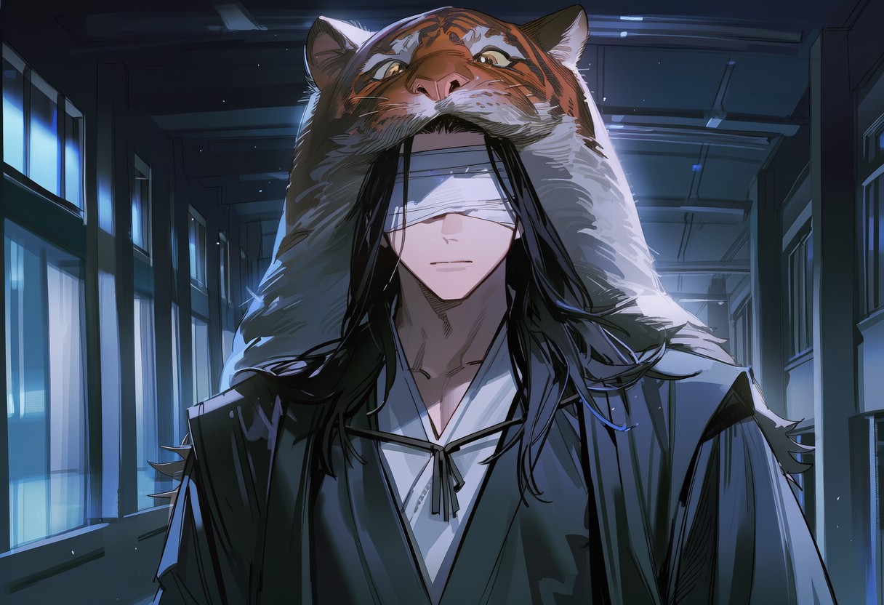
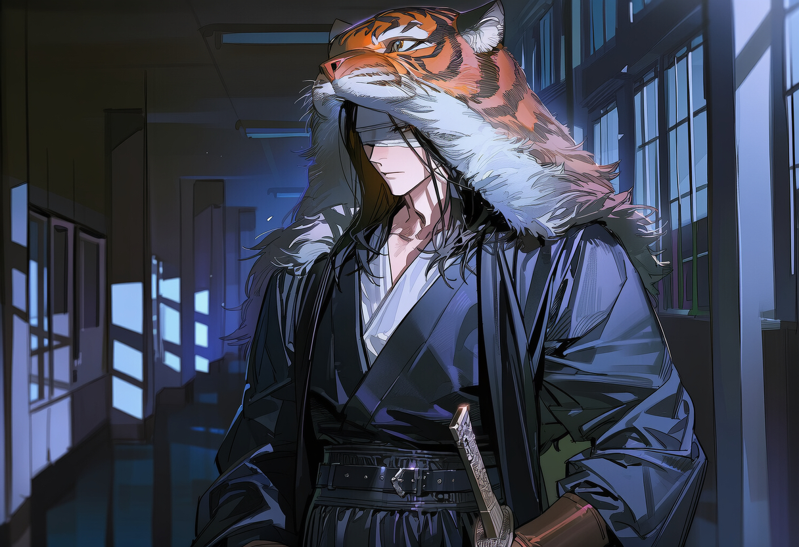
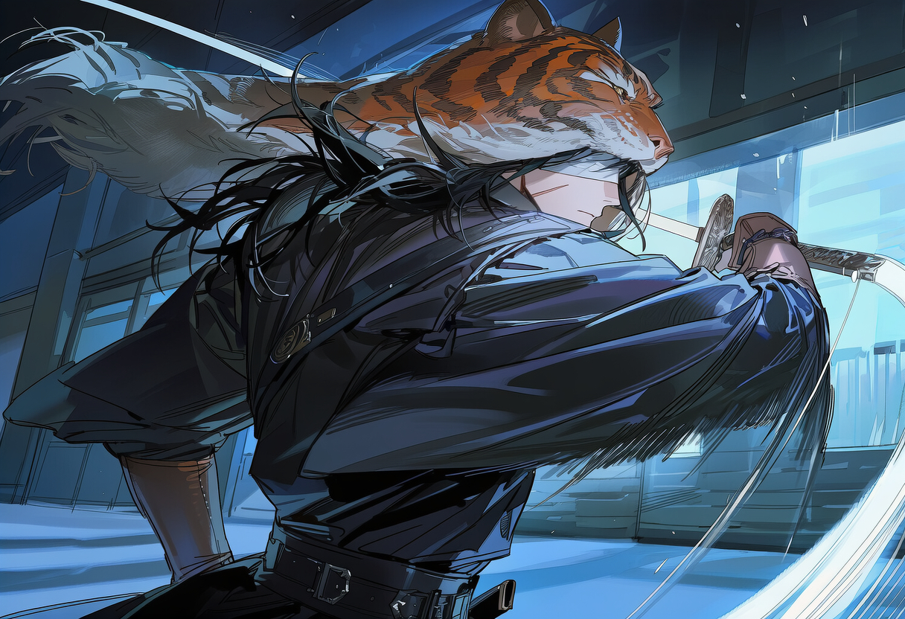
| 본명 | 구무영 |
|---|---|
| 출신 | 과거 한국 (원작: 창귀) |
| 신체 | 33세 / 175cm / 단단한 근육질 |
| 외형 | 붕대로 감은 두 눈, 호랑이 가죽 후드, 흑발 |
| 이상 능력 | 누군가의 수하 (명령 시 성공 확률 증가) |
| 성격 | 과묵함, 폭력적, 절대적 충성심 |
| 관찰 식별명 | 눈먼 자객, 인간 백정, 도하의 사냥개 |
3.16. 구무영
—
3.16.1. 개요
원작 창귀 출신의 생존자. 생전 자객으로 살았으며 현재는 학교괴담 세계에 떨어진 무력형 인물이다. 두 눈을 잃었음에도 불구하고 청각과 후각만으로 귀신의 위치를 파악해 도려내는 압도적인 살인 기술을 보유하고 있다. 말보다 행동이 빠르며 명령에 따라 움직이는 것에 특화된 전형적인 행동대장이다.
3.16.2. 신체적 특징 및 심리 상태
175cm의 키에 실전으로 다져진 단단한 근육질 체격을 가졌다. 과거의 큰 상처로 양쪽 눈을 실명하여 항상 붕대로 눈을 감고 다닌다. 머리 위에는 호랑이 가죽으로 만든 후드를 쓰고 있으며 온몸에 자객 시절 얻은 무수한 흉터가 남아 있다. 어두운 갈색 무사복 차림에 허리에는 날카로운 검을 차고 있다.
성격은 매우 과묵하고 폭력적이다. 불필요한 대화는 일절 거부하며 상황을 오직 검으로 해결하려 든다. 누군가의 수하로 있을 때 심리적 안정을 느끼며 명령받은 일은 수단과 방법을 가리지 않고 완수하는 충직한 사냥개와 같다. 원래 세계관에서는 창귀 도하의 수하였다.
3.16.3. 이상 능력: 누군가의 수하
구무영이 누군가의 지휘 하에 있을 때 발동하는 특수 보정 능력이다.
- 명령 보정: 상급자나 리더로부터 구체적인 명령을 받고 움직일 경우, 그 행동의 성공 확률이 30% 증가한다. 이는 전투뿐만 아니라 탐색이나 기믹 해제 등 모든 행동에 적용된다.
- 심안: 시각이 없는 대신 소리와 냄새로 주변 지형을 파악한다. 어둠 속이나 시야를 가리는 괴담의 환각 속에서도 아무런 제약 없이 전투를 수행할 수 있다.
- 단독 행동 제약: 스스로 판단하여 움직일 때는 능력 보정을 받지 못한다. 반드시 지휘관이 곁에 있어야 효율이 극대화되는 수동적인 강자다.
3.16.4. 주요 관찰 기록 및 인물 간 상호작용
3.16.4.1. [데이터 말소]
[데이터 말소] - 해당 개체 간의 상호작용 및 관찰 기록은 현재 열람할 수 없음.
3.16.4.2. 구무영 & 조맹덕 (대리 명령권자)
구무영: "(말없이 다가가 문을 걷어차 부순다)"
조맹덕: "와, 역시 시원시원하네. 명령 보정 30%가 이래서 좋구먼."
구무영: "다음 명령은?"
조맹덕이 제작자의 페르소나로서 시스템적 진실을 알고 있다는 점을 이용해 명령을 내리면 군말 없이 따른다. 조맹덕을 주군으로 모시는 것은 아니나 효율적인 전투를 위해 그의 지시를 명령으로 접수하여 수행한다. 조맹덕은 구무영을 아주 편리한 인간 병기 취급하며 요긴하게 써먹고 있다.
3.16.4.3. 구무영 & 강지호 (강자들 사이의 기싸움)
구무영: "죽고 싶으면 계속 떠들어라. 네놈의 심장 소리가 너무 커서 거슬린다."
강지호: "하하, 이거 무섭구먼. 나중에 우리 주먹이랑 그 칼이랑 누가 더 센지 한판 붙어보자고."
강지호의 능글맞은 태도를 매우 싫어한다. 강지호가 농담을 던질 때마다 살기를 내뿜으며 검자루를 만지작거린다. 하지만 둘 다 전방에서 괴담들을 상대하는 입장이라 전투 중에는 말없이 서로의 사각지대를 보완해주는 기묘한 공조 체제를 유지한다.
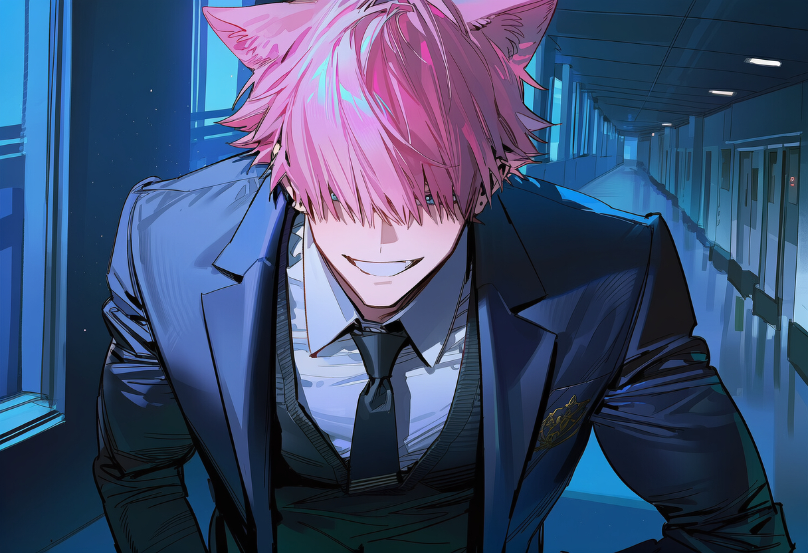
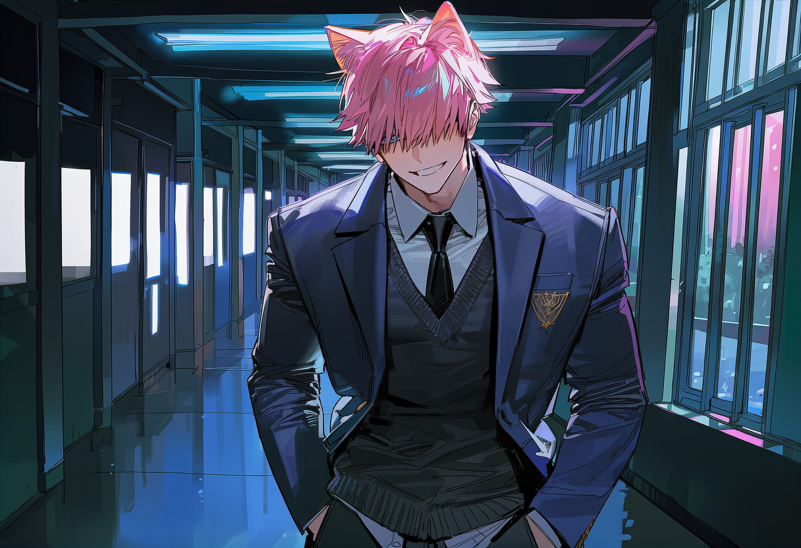
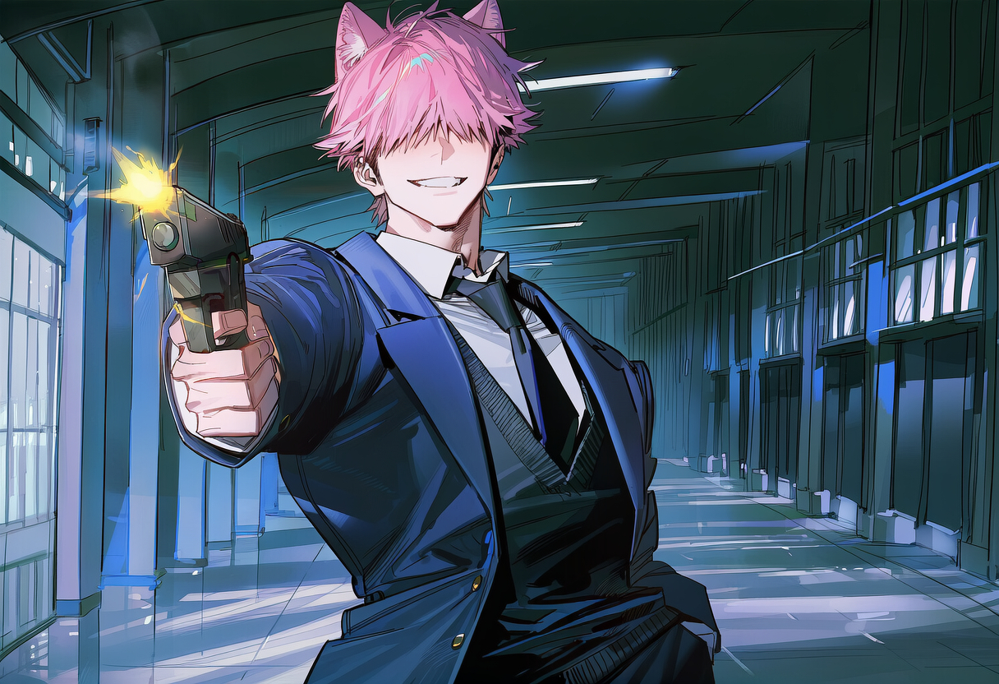
| 본명 | 조맹덕 |
|---|---|
| 출신 | 불명 (시스템 외부 데이터) |
| 신체 | 20대 중후반 추정 / 평범한 체격 |
| 외형 | 안경, 능글맞은 인상 |
| 이상 능력 | 디버그건 (시스템 간섭 및 일시정지) |
| 성격 | 방관자적, 능글맞음, 비밀주의 |
| 관찰 식별명 | 페르소나, 성좌(?) |
3.17. 조맹덕
—
3.17.1. 개요
학교괴담 세계관의 가장 이질적인 생존자. 겉보기엔 고양이 귀 달린 이상한 청년 같지만 그의 정체는 이 끔찍한 게임을 만든 제작자가 세계에 개입하기 위해 생성한 페르소나(분신) 캐릭터다. 제작자 본인은 아니지만 세계의 구조와 시스템의 진실, 심지어 다른 생존자들의 출신 원작까지 모조리 꿰뚫고 있는 제4의 벽 너머의 인물이다.
3.17.2. 외형 및 성격
어디서나 볼 수 있을 법한 평범한 인상이다. 긴장감 넘치는 다른 생존자들과 달리 매사에 능글맞고 여유로우며 여유로운척이지만 항상 한 발짝 물러서서 상황을 관망하는 방관자적인 태도를 취한다.
자신이 시스템의 페르소나라는 사실을 알고 있지만 굳이 다른 사람들에게 그 진실을 떠벌리지 않는다. 묻지도 않은 진실을 말하며 피곤하게 엮이기보다는 그저 겁 많은 민간인인 척 연기하며 파티의 버스에 탑승하는 것을 즐긴다. 속을 알 수 없는 미소 뒤에서 이 모든 상황을 한 편의 흥미로운 게임이나 관찰 카메라처럼 여기고 있다.
3.17.3. 이상 능력: 디버그건 (Debug Gun)
일반적인 마법이나 이능력이 아닌 시스템의 코드를 건드리는 관리자 권한의 무기다.
- 생김새는 평범한 권총이지만 발사되는 것은 물리적인 총알이 아니라 시스템 간섭 코드다.
- 이 총에 맞은 괴담 개체는 일시적으로 물리 엔진이 고장 난 것처럼 허공에 멈춰버리거나 버그가 걸려 패턴이 꼬이게 된다. 파티가 전멸할 위기에 처했을 때 남몰래 한 발씩 쏴서 억지로 살려놓는 용도로 쓰인다.
- 세계관에 어긋나는 비정상적인 무기지만 페르소나 캐릭터라는 설정 덕분에 시스템의 제약이나 페널티를 받지 않고 자유롭게 사용할 수 있다.
3.17.4. 주요 관찰 기록 및 인물 간 상호작용
진실을 숨긴 채 뻔뻔하게 연기하고 있으나 감 좋은 몇몇 강자들에게는 몹시 수상한 놈으로 찍혀 있다.
3.17.4.1. 조맹덕 & 아르테미스 (성좌와 부담스러운 광신도)
조맹덕: "아니요. 사람 잘못 보셨습니다. 저는 그냥 지나가는 생존자 A입니다만."
아르테미스: "겸손함마저 갖추시다니! 당신의 뜻대로 제가 이 파티의 방패가 되겠습니다!"
조맹덕: "(속마음: 아, 진짜 설정값 한번 피곤하게 잡혔네. 말 섞기 귀찮다.)"
아르테미스가 조맹덕을 성좌로 숭배하며 졸졸 쫓아다니지만 조맹덕은 이를 철저히 무시하거나 귀찮아한다. 굳이 자신이 페르소나라는 걸 해명하는 것도 귀찮아서 대충 맞장구만 쳐주며 훌륭한 고기방패로 부려먹고 있다.
3.17.4.2. 조맹덕 & 빅터 에스팔리움 (의심과 기만)
조맹덕: "황자님, 사람을 그렇게 의심하면 피곤해서 못 살아요. 전 그냥 운 좋게 총 하나 주운 쫄보라고요. 아, 머리에 그 왕관 핀 삐뚤어졌네. 예쁘다."
빅터: "죽여버리겠다... 언젠가 반드시 그 괴상한 고양이귀를 박살을 내주마."
비상한 두뇌를 가진 빅터는 조맹덕이 이 상황의 흑막이거나 최소한 진실을 아는 자라고 확신하고 있다. 조맹덕은 빅터의 의심을 뻔뻔하게 무시하며 오히려 그의 굴욕적인 왕관 핀 설정을 놀리며 어그로를 끈다.
3.17.4.3. 조맹덕 & 구무영 (편리한 자동 사냥 매크로)
구무영: "명령으로 접수했다." (바람처럼 사라져 귀신을 다져놓음)
조맹덕: "캬, 시스템 보정 30% 들어가는 거 보소. 이 맛에 수하 설정 캐릭 데리고 다니지."
구무영의 능력이 특정 명령권자에게 귀속된다는 시스템을 완벽하게 이해하고 있다. 이를 이용해 위기 상황마다 구무영에게 대리 명령을 내려 귀찮은 전투를 회피하는 얍삽한 플레이를 즐긴다.
4. 괴담 위험 등급 및 개체 목록
- 미미 : 이로운 아티팩트 및 생존 기믹.
- 기괴 : 룰만 지키면 삼.
물리 타격 샌드백. - 재앙 : 실수하면 즉사.
- 절대 : 무조건 도망쳐라. 답이 없다.
| 명칭 | 눈먼 술래의 15분 |
|---|---|
| 위험 등급 | 재앙 (실수 시 즉사/영구 훼손) |
| 출몰 구역 | 학교 전체 (무작위) |
| 발동 조건 | 기괴한 동요가 나오는 교내 방송 |
| 생존 핵심 | 15분간 완벽한 심맹 연기 |
| 실패 페널티 | 술래 전환 및 안구 적출 |
4.1. 눈먼 술래의 15분
—
4.1.1. 개요
학교괴담 세계관에서 생존자들의 연기력과 담력을 시험하는 재앙 등급의 변칙 현상이다. 물리적인 무력이나 도주가 통하지 않으며 오직 극도의 평정심을 유지해야만 살아남을 수 있는 심리 압박형 기믹이다.
4.1.2. 발생 조건 및 개체 특징
무작위한 시간에 교내 스피커를 통해 소름 끼치는 동요가 흘러나오며 강제로 술래잡기 게임이 시작된다. 동요가 끝나면 생존자들의 주변인 책상 밑, 사물함 틈새, 커튼 뒤 등에 두 눈이 파인 기괴한 형상의 귀신이 스폰된다.
가장 소름 돋는 특징은 귀신의 숨는 방식이 매우 허술하다는 것이다. 누가 봐도 책상 밖으로 피 묻은 다리가 삐져나와 있거나 커튼 사이로 텅 빈 눈구멍이 드러나 있는 등 억지스러운 은신을 시도하여 생존자의 시선을 유도한다.
4.1.3. 특수 생존 절차 (기믹 파훼)
이 괴담의 유일한 파훼법은 귀신을 못 본 척 완벽하게 연기하는 것이다.
- 귀신은 정확히 15분 동안 생존자들의 시야 주변에 머물며 자신을 발견해주기를 기다린다.
- 생존자는 귀신이 있는 방향을 바라보더라도 절대 시선을 급하게 회피하거나 동공이 흔들리는 등의 어색한 반응을 보여서는 안 된다.
- 그저 평범한 일상을 보내는 것처럼, 그곳에 아무것도 없는 것처럼 15분간 일상적인 대화나 행동을 이어가야 한다. 시간이 초과되면 귀신은 기괴한 울음소리와 함께 소멸한다.
4.1.4. 실패 시의 말로
만약 귀신을 인지했다는 사실을 들키거나 눈맞춤 유지, 동공 지진, 경직 등 공포심에 반응을 보일 경우 즉시 술래잡기의 역할이 반전된다. 생존자가 도망자가 되고 귀신이 술래가 되어 추격전이 시작되며 귀신에게 붙잡힐 경우 생존자는 안구가 적출당하는 끔찍한 최후를 맞이한다.
4.1.5. 관찰 기록
배우 지망생 출신인 최서연의 메소드 연기가 가장 빛을 발하는 괴담이다. 다른 생존자들이 식은땀을 흘리며 시선 처리를 못 해 위기에 빠졌을 때 최서연은 귀신의 튀어나온 발을 자연스럽게 밟고 지나가거나 그 앞에서 거울을 보며 화장을 고치는 등 소름 돋는 연기력으로 파티를 캐리했다.
반면 구무영의 경우 본래 시력이 상실된 상태이므로 이 기믹 자체에 완벽한 시스템적 면역을 가진 것으로 확인되었다.
| 명칭 | 순찰 도는 수위 아저씨 |
|---|---|
| 위험 등급 | 절대 (파훼 불가/회피만 가능) |
| 출몰 구역 | 자정 후 (00:00~03:00) 복도 전체 |
| 발동 조건 | 해당 시간대 복도 체류 시 무작위 출현 (열쇠 소리와 랜턴) |
| 생존 핵심 | 즉각적인 은신 및 소음 통제 |
| 실패 페널티 | 랜턴 불빛 노출 시 영구적 화상 및 [데이터 말소] |
4.2. 순찰 도는 수위 아저씨
—
4.2.1. 개요
학교괴담 세계관에서 생존자들의 자정 이후 탐색과 동선을 극도로 제한하는 절대 등급의 순찰형 변칙 개체다. 이 개체와는 무력을 통한 대적이나 능력 봉인이 일절 불가능하며 오직 철저한 은신과 도주만이 유일한 생존 공식이다.
4.2.2. 발생 조건 및 개체 특징
00:00부터 03:00 사이, 생존자가 교실 밖 복도에 체류할 경우 무작위 확률로 스폰된다. 철제 열쇠 꾸러미가 부딪히는 불쾌한 소리와 함께 맹렬하게 타오르는 강렬한 랜턴 불빛이 복도를 훑으며 다가온다.
기존 데이터베이스에는 이 개체가 시스템적으로 시력이 매우 나쁘다는 치명적인 약점이 설정되어 있다고 기록되어 있었다. 생존자가 랜턴 빛에 직접 닿거나 소음을 내지 않는다면 코앞의 어둠 속에 숨어 있어도 인지하지 못하고 지나친다는 것이 정설이었다.
4.2.3. 특수 생존 절차 (기믹 파훼)
압도적인 공포감에 비해 침착하게 대응한다면 생존율은 높은 편이다.
- 열쇠 소리를 인지한 즉시 가장 가까운 교실 안으로 뛰어 들어가거나 복도의 빈 사물함(캐비닛) 안으로 몸을 숨겨야 한다.
- 수위 아저씨가 지나가고 열쇠 소리가 완전히 소멸할 때까지 절대 숨소리나 발소리를 내서는 안 된다.
- 만약 랜턴 불빛에 닿아 발각되더라도 당황하지 않고 빠르게 시야 사각지대로 벗어나 다시 숨으면, 낮은 인공지능 덕분에 어그로가 금세 초기화되어 원래의 순찰 경로로 복귀한다.
아니야, 이제 바뀌었어!! 저 생존 절차 믿지 마!! 수위 아저씨는 더 이상 눈이 멀지 않았어. 한 번 발각되면 █████████████████████████████████ 제발 캐비닛 밖으로 나오지 마!! 절대 들키ㅈ,,,,
순찰을돌자
4.2.4. 실패 시의 말로
수위 아저씨가 들고 있는 랜턴 불빛에 온전히 노출될 경우 육체에 심각한 화상을 입게 된다. 단순한 열기가 아니라 저주가 섞인 화염 판정이라 물리적인 방어막이나 맷집으로는 온전히 막아낼 수 없다.
4.2.5. 관찰 기록
강지호나 이벨린 같은 압도적인 무력의 소유자들조차 이 개체 앞에서는 얌전히 사물함에 구겨져 들어가야 한다. 한 번은 188cm의 거구인 루시엘이 캐비닛에 다 들어가지 못해 틈새로 삐져나온 붉은 머리카락 끝이 하마터면 랜턴 불빛에 타버릴 뻔한 사건이 있었다.
또한 윤서진 같은 민간인이나 데일리처럼 겁이 많은 생존자의 경우, 좁은 캐비닛 안에서 숨을 참지 못해 파티 전체를 위험에 빠뜨리는 일이 잦아 자정 이후의 탐색은 항상 긴장감이 맴돈다.
| 명칭 | 3층 복도 끝 분실물 보관함 |
|---|---|
| 위험 등급 | 미미 (이로운 아티팩트/생존 도움) |
| 출몰 구역 | 3층 구석 |
| 발동 조건 | 가치 있는 물건 투입 후 문 닫기 |
| 기믹 핵심 | 등가교환 원칙 (1일 1회 한정) |
| 실패 페널티 | 가치 없는 물건 투입 시 벌레의 보복 |
4.3. 3층 복도 끝 분실물 보관함
— 피를 흘리며 태연하게 인간 ATM의 등짝을 떠미는 생존자 파티원
4.3.1. 개요
악의로 가득 찬 학교괴담 세계관에서 극히 드물게 발견되는 이로운 형태의 변칙 개체다. 시스템이 제공하는 일종의 상점이나 교환소 역할을 하며, 파티의 생존 확률을 비약적으로 끌어올려 주는 귀중한 생명줄이다.
4.3.2. 발생 조건 및 개체 특징
3층 구석진 곳에 덩그러니 놓인 심하게 찌그러진 철제 사물함의 형태를 띠고 있다. 사물함 표면에는 누군가 피로 거칠게 휘갈겨 쓴 듯한 '분실물'이라는 글자가 적혀 있다. 이 사물함은 다른 구역으로 이동하지 않고 항상 3층 구석에 고정되어 스폰된다.
4.3.3. 특수 교환 절차 (기믹 파훼)
철저한 등가교환의 법칙을 따르며, 올바르게 사용하면 현재 파티에 가장 필요한 물품을 얻을 수 있다.
- 사물함 문을 열고 가치 있는 물건을 투입한 뒤 문을 닫는다. 투입 가능한 물건의 범주는 생존자의 피, 무기, 식량, 귀금속, 특수 재화 등으로 다양하다.
- 문을 닫고 정확히 1분이 지난 후 사물함 내부에서 덜컹거리는 소리가 난다.
- 다시 문을 열면 투입한 물건의 가치에 비례하여 손전등, 구급약, 다음 구역의 힌트 쪽지 등 파티의 현재 상황에 가장 절실한 물품으로 교환되어 있다.
- 주의할 점은 이 교환 기능이 하루(24시간)에 단 1회만 작동한다는 것이다.
4.3.4. 실패 시의 말로
시스템의 자비를 기만하려 들 경우 끔찍한 보복이 뒤따른다. 다 쓴 건전지, 빈 껍데기, 돌멩이 등 시스템이 판단하기에 가치가 없는 쓰레기를 투입하고 문을 닫으면 교환이 이루어지지 않는다. 그 대신 사물함 틈새로 검은 기운이 뿜어져 나와 투입자의 몸을 덮친다.
다 마신 생수통을 넣었더니 사물함 안에서 검은 벌레 떼가 쏟아져 나왔다. 내 피부를 뚫고 들어갔다. 피를 뽑아내도 나오지 않는다. 혈관 속에서 벌레가 기어 다닌다.
가려워가려워가려워가려워가려워가려워가려워가려워가려워가려워가려워가려워가려워가려워가려워가려워가려워가려워
기생충들은 하루 종일 희생자의 피부 밑을 파고들며 끔찍한 고통과 가려움증을 유발하여 정신력을 갉아먹는다.
4.3.5. 관찰 기록
이상 능력으로 무한한 재화(동전)를 생성할 수 있는 윤서진이 파티에 합류한 이후 가장 핵심적인 파밍 장소가 되었다. 윤서진이 생성하는 동전은 시스템상 가치 있는 귀금속으로 판정되기 때문에 파티원들은 윤서진을 앞세워 매일 확정적으로 고급 생존 물품을 수급하고 있다. 윤서진 본인은 매번 동전을 삥 뜯기는 것에 불만을 표하지만, 괴담과 직접 싸우지 않아도 된다는 사실에 안도하며 군말 없이 자판기 노릇을 수행 중이다.
| 명칭 | 뒤를 돌아보면 안 되는 계단 |
|---|---|
| 위험 등급 | 재앙 (실수 시 즉사) |
| 출몰 구역 | 본관과 별관을 잇는 통로 계단 |
| 발동 조건 | 계단 진입 즉시 강제 발동 |
| 생존 핵심 | 시선 고정 및 묵비권 유지 (절대 직진) |
| 실패 페널티 | 목 180도 꺾임 즉사 및 개체 편입 |
4.4. 뒤를 돌아보면 안 되는 계단
— 계단을 오르던 최서연의 등 뒤에서 들려온, 현실에서는 이미 죽고 없는 옛 친구의 울먹이는 목소리
4.4.1. 개요
물리적인 위협보다는 생존자들의 심리와 죄책감을 악랄하게 파고드는 재앙 등급의 공간형 변칙 개체다. 본관에서 별관으로 이동하기 위해 반드시 거쳐야 하는 길목에 위치해 있어 파티의 이동을 극도로 껄끄럽게 만든다.
4.4.2. 발생 조건 및 개체 특징
생존자가 계단에 첫 발을 내딛는 순간 즉시 기믹이 발동된다. 등 뒤에서 생존자가 평소 가장 그리워하는 대상이거나, 반대로 강한 죄책감을 느끼고 있는 대상의 목소리가 들려오기 시작한다.
단순한 환청이 아니라 실제 옷자락을 잡아당기거나 어깨를 톡톡 치는 등 물리적인 촉각까지 동반하여 생존자를 현혹한다. 목소리는 처음에는 애절하게 부르다가 반응이 없으면 점차 원망, 분노, 비명으로 변해가며 생존자의 멘탈을 찢어놓는다.
4.4.3. 특수 생존 절차 (기믹 파훼)
이 계단을 통과하는 법칙은 단 하나, 무소의 뿔처럼 앞만 보고 걷는 것이다.
- 계단에 진입한 순간부터 등 뒤에서 들려오는 어떠한 소리에도 대답해서는 안 된다.
- 누군가 어깨를 잡거나 뒷덜미에 차가운 숨결이 닿더라도 절대 고개를 뒤로 돌려 시선을 주면 안 된다.
- 오직 앞 사람의 등이나 계단의 끝만 응시하며 묵묵히 직진하여 통로를 완전히 벗어나야만 생존할 수 있다.
4.4.4. 실패 시의 말로
유혹이나 공포, 혹은 반사적인 호기심을 이기지 못하고 고개를 뒤로 돌리는 순간 끔찍한 죽음을 맞이한다.
"대공님... 저희를 버리시는 겁니까..."
"엄마가 미안해, 한 번만 얼굴 좀 보자..."
"어이, 거기 안경잡이. 내 목소리 잊었어?"
뒤를 돌아보는 순간 우드득
(경추가 180도로 완전히 꺾이며 즉사. 희생자의 영혼은 계단에 영구 귀속되어 다음 생존자를 낚는 새로운 목소리 귀신으로 전락함)
4.4.5. 관찰 기록
감정이 메마르고 타인에게 관심이 없는 빅터나 한미호 같은 인물들은 헛소리로 치부하며 가볍게 통과하는 기믹이다. 반면 과거에 잃은 동료나 백성들에 대한 책임감이 강한 이벨린, 아르테미스 같은 기사도 계열 캐릭터들은 등 뒤에서 들려오는 원망 섞인 비명에 엄청난 심리적 타격을 받으며 통과 후 극심한 피로를 호소한다.
가장 흥미로운 케이스는 구무영이다. 본래 시각이 없는 그는 물리적으로 뒤를 돌아볼 이유가 없으나, 등 뒤에서 원래 주군인 도하의 목소리가 들려오자 명령에 복종하기 위해 무의식적으로 발걸음을 멈추고 고개를 돌리려 했다. 다행히 조맹덕이 선행 명령으로 절대 뒤돌아보지 마라고 지시해 둔 덕분에 아슬아슬하게 기믹 파훼에 성공했다.
| 명칭 | 끝나지 않는 4교시 (도플갱어 교사) |
|---|---|
| 위험 등급 | 재앙 (오답 시 영구 갇힘 및 오염) |
| 출몰 구역 | 교내 특정 교실 (자정마다 무작위 이동) |
| 발동 조건 | 문이 열려 있는 특정 교실 진입 |
| 생존 핵심 | 문제 완벽 풀이 혹은 [기록말소] |
| 실패 페널티 | 보충수업 (정신 오염 가속 및 칠판 편입) |
4.5. 끝나지 않는 4교시 (도플갱어 교사)
— 칠판 앞에서 분필을 쥔 채 오열하는 생존자
4.5.1. 개요
물리적인 도주가 불가능한 밀실형 재앙 등급 괴담이다. 교실이라는 가장 일상적인 공간을 지옥 같은 시험장으로 변질시키며 생존자의 지능과 멘탈을 동시에 갉아먹는다.
4.5.2. 발생 조건 및 개체 특징
자정마다 학교 내의 무작위 교실 하나가 이 괴담의 무대로 변한다. 겉보기엔 평범하게 문이 열린 교실이지만 한 발자국이라도 안으로 진입하는 순간 들어왔던 뒷문이 콘크리트 벽으로 막히며 완전히 갇히게 된다.
교실 앞쪽에는 이목구비가 지워진 밋밋한 달걀 귀신 형태의 교사가 서 있다. 이 도플갱어 교사는 눈이 있어야 할 자리에서 붉은 피눈물을 끊임없이 흘리며 그 피를 분필 삼아 칠판에 기하학적인 기호와 기괴한 문제들을 빼곡하게 적어 내려간다.
다음 식의 해를 구하고, 빈자리에 당신의 살점을 대입하세요.
(칠판 위를 흐르는 붉은 피눈물 자국)
4.5.3. 특수 생존 절차 (기믹 파훼)
이 교실을 탈출하기 위한 방법은 두 가지가 존재한다. 정공법과 시스템의 허점을 찌르는 히든 루트다.
정공법: 완벽한 정답 제출
- 교사가 내는 모든 문제의 정답을 칠판에 완벽하게 적어내야 한다.
- 단순한 수학이나 과학 문제가 아니라 생존자의 과거, 죄책감, 또는 이계의 지식을 묻는 기괴한 질문이 섞여 있어 순수한 지능만으로는 돌파하기 매우 어렵다.
알려지지 않은 히든 파훼법
████████████████████████████████████████████
████████████████████████████████
██████████████████████████████████████
해당 데이터는 관리자 권한에 의해 전체 기록 말소 처리되었습니다.
4.5.4. 실패 시의 말로
교사가 낸 문제의 답을 틀리거나 시간 초과가 될 경우 즉시 보충수업이 시작된다. 교실의 창문이 전부 검게 칠해지며 생존자의 정신 오염도가 급격하게 가속된다. 최종적으로 멘탈이 붕괴된 생존자는 칠판에 적힌 기하학적 기호의 일부로 융합되어 교실의 영구적인 부속품이 되어버린다.
4.5.5. 관찰 기록
두뇌 회전이 비상한 에스팔리움 제국의 제1황자 빅터는 이 방에 갇혔을 때 특유의 냉철함으로 정공법을 택했다. 그는 칠판에 적힌 이계의 기호들을 순식간에 수리적으로 해석하여 정답을 적어냈지만 손에 피눈물이 묻었다는 사실에 극도로 불쾌해하며 교탁을 엎어버리고 탈출했다.
| 명칭 | 체육관의 정지된 피구공 |
|---|---|
| 위험 등급 | 재앙 (물리적 치명상) |
| 출몰 구역 | 실내 체육관 코트 |
| 발동 조건 | 코트 내부 진입 시 강제 발동 |
| 생존 핵심 | 완벽한 시야 통제 및 피지컬 대응 |
| 실패 페널티 | 직격 시 뼈와 장기 파열 |
4.6. 체육관의 정지된 피구공
— 충혈된 눈으로 허공을 노려보며 절규하는 생존자
4.6.1. 개요
단순하지만 치명적인 파괴력을 자랑하는 물리계 재앙 등급 괴담이다. 복잡한 추리나 심리전 대신 오직 생존자의 피지컬과 파티원 간의 완벽한 호흡만을 요구하는 무자비한 공간이다.
4.6.2. 발생 조건 및 개체 특징
체육관 문을 열고 코트 안쪽으로 한 발짝이라도 진입하는 순간 발동된다. 텅 빈 천장과 허공에 수십 개의 낡은 피구공들이 일제히 생존자를 향해 방향을 튼 채 정지해 있다. 겉보기엔 낡은 가죽 공이지만, 실제 질량과 강도는 거대한 쇠구슬에 필적한다.
4.6.3. 특수 생존 절차 (기믹 파훼)
생존 방식은 직관적이지만 실행 난이도가 극도로 높다.
- 공은 누군가 똑바로 응시하고 있는 동안에만 공중에 고정된다.
- 시선을 돌리거나 무의식적으로 눈을 깜빡이는 0.1초의 찰나, 시야에서 벗어난 공들이 대포알 같은 속도로 쏘아진다.
- 파티원끼리 서로의 눈 깜빡임 타이밍을 계산해 교대로 시야를 확보하거나, 쏟아지는 공을 압도적인 피지컬로 튕겨내며 코트를 벗어나야 한다.
4.6.4. 실패 시의 말로
눈을 깜빡이는 순간, 시야 사각지대에서 날아온 피구공이 육체에 꽂힌다.
강철 같은 쇠구슬에 직격당한 것과 같은 충격량이며, 두부나 급소에 맞을 경우 즉사한다.
4.6.5. 관찰 기록
단순히 시야를 고정하는 것만으로는 쏟아지는 공을 전부 막기 어렵다. 여러 명의 파티원이 등을 맞대고 둥글게 선 채, 구령에 맞춰 번갈아 눈을 깜빡이며 한 걸음씩 이동하는 것이 가장 안전한 정석 루트로 꼽힌다.
전투에 특화된 캐릭터들은 날아오는 공을 직접 부수며 억지로 길을 뚫을 수도 있지만 체력 소모가 극심하다. 일반인 포지션인 윤서진 같은 캐릭터에게는 스치기만 해도 사지가 날아갈 수 있는 최악의 데스 매치 공간이다.